STUDIO A. ／ D 組
2026 / 08 / 27電商部 ＋ 行銷客服部 · 12 人
建立我們的
AI 工作環境。
AI 工作環境。
一個 AI 工作環境 · 一座個人知識庫 · 一個自己寫的 skill · 一份公司樣子的簡報 · 一塊自己做的競品監控板。
講師 余文皓
匯流顧問有限公司
2026 / 08 / 27
01
STUDIO A · D 組 · 2026/08/27
開場25 MIN
這一年，你的動態牆大概長這樣。
AI 取代
會被淘汰
再不學就來不及
這些工作最先消失
白領首當其衝
不是 AI 取代你，是會用 AI 的人取代你
五年內消失的職業
企業導入 AI 後裁員
Agent 元年
AI 焦慮
人力精簡
一人公司
同事已經在用了
你還在用人工？
提示工程
AI 素養
落後就追不上
不轉型就淘汰
數位轉型
學不完
每週都有新的
先卡位再說
02
開場
開場25 MIN
所以我開始追。
問答 · 查東西
ChatGPT · Claude · Gemini · Grok · Perplexity
讀一疊資料
NotebookLM · Perplexity Spaces · 各種 PDF 問答
簡報 · 做圖
Gamma · Canva AI · Napkin · Midjourney · Ideogram
開會 · 逐字稿
Otter · Fireflies · tl;dv · 各家內建的會議摘要
影音 · 配音
HeyGen · Suno · ElevenLabs · CapCut · Runway
寫東西 · 筆記
Notion AI · Heptabase · 各家內建的寫作助手
自動化 · 代理
n8n · Make · Zapier · Manus · 一堆自訂 GPTs
⋯⋯還有上禮拜才存下來、到現在還沒點開的那幾個。
確實都比較快了 —— 但每一個，都只幫我一小段。
03
開場
開場25 MIN
一小段、一小段 ——
下班之後，散在各個地方。
下班之後，散在各個地方。
NotebookLM 讀完的，留在 NotebookLM。Gamma 做的簡報，留在 Gamma。三個月後你要找那份東西 —— 記得在哪一個裡面嗎？
開場 · 25 MIN
04
開場
所以今天建一個工作環境
建一個AI 工作環境。
那二十個入口
在別人的網站上
你去它那裡、用完就走
東西留在它家，不在你家
下次再從頭講一次你是誰
明年換一個新的 —— 重來
一個工作環境
在你自己的電腦裡
它讀得到你的檔案
做出來的東西留在你的資料夾
它記得你是誰
用越久，它越知道你怎麼做事
二十個入口→ 一個地方。
05
開場
STUDIO A.
今天的成果五樣 · 都是你自己的
今天結束，你手上會有這五樣。
不是五份筆記 —— 是五個做好、能繼續用的東西。
上午 · 09:55 起
AI
工作環境
工作環境
住在你自己電腦裡、讀得到你檔案的一個地方。用越久，它越知道你怎麼做事。
上午 · 11:15 起
個人
知識庫
知識庫
你查到的東西自己排好隊 —— 明年再問一次，它還找得到。
下午 · 13:30 起
建立 Skill
的能力
的能力
今天做過一次的事包成一句話 —— 之後重跑，不用再交代一遍。
下午 · 15:00 起
公司樣子
的簡報
的簡報
內容你出、版面它排 —— 生出來就是 STUDIO A 規格的投影片。
下午 · 15:30 起
Vibe Coding
競品監控平台
競品監控平台
不用寫程式，做出一塊每週一早上自己更新的競品比價板。
五樣都是你自己的 —— 不是我 demo 給你看的。
06
開場
我是誰開場前 · 30 秒
我是余文皓。
7 年
工程師
→
10 年
專案經理
→
3 年
數據分析
→
Minerva · MDA
決策分析碩士
→
2025 · 第一批
Claude Code 使用者
→
2026
匯流顧問成立
我在公司裡上了二十年的班 —— Nokia、聯詠、友達，科技業。
2023 年邊上班邊唸碩士，整個過程跟 AI 一起做。2025 年離開公司。
Claude Code 第一批使用者 —— 拿它做產品、管公司、也管生活。今年成立匯流顧問。
Anthropic 官方認證 ＋ 官方夥伴
個人
Claude Certified Architect – Foundations
公司
Claude Partner Network · 匯流顧問有限公司


新工具還是會一直出 —— 我已經不追了。今天之後，你也不用。
07
開場
輪到你一句話 · 互相認識
開始之前 —— 一句話，讓大家認識你。
說兩件事
你的名字，
再加一句話。
再加一句話。
A
今天想帶走什麼 —— 手上卡住的那件事。
B
用過 AI 嗎 —— 哪些工具、用起來怎麼樣。還沒真的用過也沒關係。
講哪個都好 —— 今天一整天，我會接住它。
今天這一屋子 · 12 位
電商部 · 3
Rita
Alison
Eunice
行銷客服部 · 9
Bella
Amy
Willy
Zina
Ian
Katherine
Sue
Pekka
its
一整天
卡住舉手 —— 我在桌邊。先做完的：把手邊那份檔案打開放著。
08
開場
系統認知30 MIN
互相認識了 ——
接下來，認識你的工具。
接下來，認識你的工具。
先看看現在的 AI 工具
09
系統認知
系統認知30 MIN
不是只有一個 AI —— 三家都在鋪一整排入口。
OPENAI
你們最可能已經在用的那家
GOOGLE
綁在 Search、Gmail、Chrome 裡
ANTHROPIC · 今天用這家
公司課前幫你們裝好的
在瀏覽器裡聊天
ChatGPT
Gemini
Claude.ai
在你的電腦上 · 跟你的檔一起工作
Codex
Antigravity
Claude Code ★ 今天主角
桌面 agent · 不用寫程式
ChatGPT Work 7 月新的
—
Claude Cowork
在你原本的文件工具裡
—
Gemini in Workspace
Claude in Excel · PowerPoint
給工程師串接
API
AI Studio
API
這半年收掉的：Sora（4/26 關） · Gemini CLI（6/18 關） · ChatGPT Atlas（8/9 關 —— 上週才收的）
10
系統認知
系統認知30 MIN
Claude 給你 —— 越來越多地方跟它對話。
Claude API
DEVELOPER · 開發者
工程師串接用、今天不碰。知道有這個。
GA · 2023 / 03
Claude.ai
BROWSER · 瀏覽器
開分頁跟它聊天。跟 ChatGPT 同一類。
GA · 2023 / 07
★ 今天主角
Claude Code
LOCAL · 本機
跟你的檔案在同一空間 —— 能讀、能寫、能跑。
GA · 2025 / 05
Claude Cowork
DESKTOP · 桌面 App
知識工作者的桌面版。跟 Code 像、長相不同。
GA · 2026 / 04
Claude Design
VISUAL · 設計
用對話做簡報、設計稿 —— 有興趣回家自己玩。
2026 / 04 · 研究預覽
把剛才那一欄放大 —— 同一家、五個入口，差別在你在哪跟它講話。今天我們用最能跟你檔案一起工作的：Claude Code。
11
系統認知
系統認知30 MIN
先把你的
工作環境打開。
工作環境打開。
環境＋記得你 · 40 MIN
12
系統認知
系統認知30 MIN
先打開工作資料夾 —— Claude 才讀得到你的檔。
1
點左邊最上面的檔案總管
像兩張紙疊在一起的那個圖示。
2
按「開啟資料夾」
3
選桌面上的 FLUX Vault Studio a
左側就出現工作資料夾的檔案樹
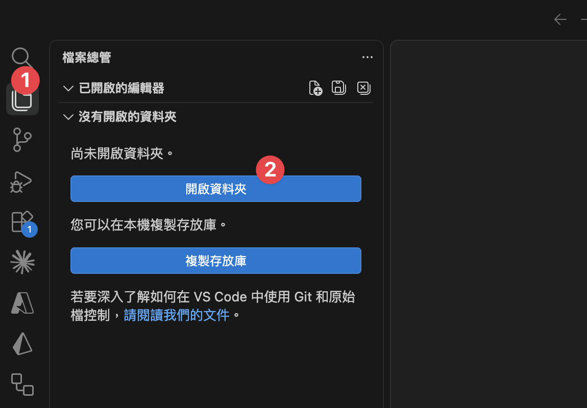
先開工作資料夾Claude 只讀「你打開的那個資料夾」—— 動手前一定要先開。
13
系統認知
系統認知30 MIN
今天的工作台 —— VS Code 一個就夠。

1
檔案總管
你的工作資料夾攤在左邊 —— 哪個檔在哪，一眼看得到。
2
編輯器
中間這塊 —— Claude 改的、你自己改的，都在這裡看。
3
對話入口
右邊那一欄 —— 你跟它講話的地方。
今天所有的動手都在這一個視窗裡 —— 檔案、編輯、跟它講話，不用切來切去。
14
系統認知
系統認知30 MIN
右邊那一欄 —— 它就是一個對話框，跟 ChatGPT、Claude.ai 一樣。
你平常用的
ChatGPT · Claude.ai
幫我把這段話改得口語一點。
好 —— 我改好了，你看看這樣順不順。
VS Code 右邊那一欄

打字打這裡
先切到 Auto ↘
你今天只會做這兩件事
1
用中文和 Claude 對話
跟你傳訊息給同事一樣 —— 想到什麼就打什麼。
2
現在先切到 Auto
右下角那個 Auto —— 切過來，它做事就不會一路停下來問你。
中間會刷出一堆看不懂的字、有時候還蹦出怪符號 —— 那是它在做事，不是你弄壞了。不用擔心。
打字的地方換了你要打的東西沒變 —— 一樣是講人話，一樣是它回你。
15
系統認知
系統認知30 MIN
既然和 ChatGPT、Claude.ai 一樣，
那今天為什麼不用它們？
那今天為什麼不用它們？
先動手 · 做完你就知道差在哪
16
系統認知
系統認知30 MIN
它住在你的電腦裡面。
試試看 · 把這句丟給它
> 我覺得電腦有點慢。幫我看看：記憶體總共多大、現在被哪些程式吃最多、哪些可以安全關掉？順便看硬碟還剩多少、什麼佔最大。
> 我覺得電腦有點慢，幫我看看記憶體…
⏺ 看系統狀態（top · vm_stat · df · du）…
⎿ 記憶體：共 16 GB、已用 13.8 GB（偏高）
⎿ 吃最多：Chrome（38 分頁）2.9 GB · Slack 1.1 GB · 預覽 0.8 GB
⎿ 可關：Chrome 舊分頁 + 沒在用的 Slack ≈ 放掉 3–4 GB
⎿ 硬碟：500 GB 剩 42 GB · Downloads/ 46 GB 最大宗
⏺ 建議：關掉沒用的 Chrome 分頁 + 清 Downloads，會明顯順。
它看到的是你這一台不是你貼上去的東西 —— 是你現在真實的狀態。瀏覽器裡的 AI 看不到這些。
17
系統認知
系統認知30 MIN
換成 ChatGPT、Claude.ai —— 這三件事會變怎樣？
CHATGPT / CLAUDE.AI · 在瀏覽器
CLAUDE CODE · 在你電腦上
它看得到什麼
✗只看得到你貼上去、傳上去的東西
✓你這台機器、你整個資料夾
它能不能動手
✗只能告訴你怎麼做 —— 動不了你的檔案
✓自己做 —— 剛剛它真的跑了指令
做完的東西放哪
✗停在分頁裡 —— 要自己複製或下載回來
✓寫回你的資料夾，存檔就在那
差別不是誰比較聰明是它在不在你工作的地方 —— 一個在分頁裡，一個在你的電腦裡。
18
系統認知
系統認知30 MIN
它在你的電腦裡 ——
那你的東西，放哪？
那你的東西，放哪？
你的工作區 · FLUX
19
系統認知
FLUX 基礎40 MIN
你的 AI 工作環境長這樣 —— 7 個資料夾 + 1 份說明書。
~/Desktop/FLUX Vault Studio a
FLUX Vault Studio a/
├── CLAUDE.md ★
├── Cockpit/ ★
├── Efforts/ ★
├── Atlas/ ★
├── Inbox/ ★
├── Calendar/
├── Guides/
└── Templates/
CLAUDE.md
助理使用說明書 · 最上面那一個檔
上午
Cockpit/
控制中心 · 本週要推進的 3–5 件寫這
上午
Efforts/
你的專案 ＋ 領域（PARA）
上午
Atlas/
知識卡 ＋ 來源（卡片盒）
上午
Inbox/
查到的東西先落這，之後再整理
上午
Calendar/
個人日記 ＋ 時間軸
Guides/
操作手冊 · SOP
Templates/
模板 · 已設好初版
沒有雲端、沒有帳號 —— 就是你電腦上一個資料夾。今天會用到上面五格，剩下三格先看過。
20
FLUX 基礎
STUDIO A.
動手一件事 · 2 MIN
開始之前 —— 先讓它存得住。
今天你會一直改這個資料夾。先做一件事，之後改壞什麼都回得去。
複製這一句、貼進去、ENTER
貼上、ENTER
> 幫我看這個工作資料夾有沒有在記錄改動（git）。
沒有的話建起來，存第一個檔，
記錄成「上課前的樣子」。
它會做三件事
1
看這個資料夾有沒有在記錄改動
2
沒有的話 —— 建起來
3
存下第一個版本
記錄成「上課前的樣子」。
之後哪一步做壞了 —— 跟它說「回到上課前的樣子」就好。
先做完的：叫它列一下這個資料夾裡現在有哪些檔。
存得住
02:00
21
FLUX 基礎
STUDIO A.
左邊點開 CLAUDE.md副檔名是 .md
那 Markdown 是什麼？—— 就是一種檔案格式。
你左邊看到的
FLUX Vault Studio a/
├── CLAUDE.md ←
├── Home.md
├── Atlas/
├── Cockpit/
├── Efforts/
├── Inbox/
└── Templates/
每個資料夾打開
裡面幾乎都是 .md
裡面幾乎都是 .md
跟這些是同一類東西
副檔名
用什麼打開
AI 讀起來
.pdf
Acrobat
要先把文字挖出來，版面常常跑掉
.docx
Word
一堆看不見的排版設定包在裡面
.xlsx
Excel
格子要另外拆，欄位對不上就錯
.txt
記事本
讀得到 —— 但哪句是標題、哪句是重點，分不出來
.md
任何一個編輯器
純文字 ＋ 幾個符號 —— 是純文字，又看得出結構
AI 就做兩件事 —— 讀文字、吐文字。所以它最好讀的，就是純文字那一種。
22
FLUX 基礎
同一份檔兩種看法
那幾個符號 —— 按兩個鍵就變成排版。
同一份檔、沒有第二個版本 —— ⌘ ⇧ V 切過去就是右邊那個樣子。
你打的 —— 純文字 + 幾個符號
# 本週
**主要任務**
- 這週 eSIM 各平台的價格
- 比我們貴的 / 比我們便宜的分開列
- 回美術那三封需求信
⌘ ⇧ V
→
渲染
排版之後 —— 讀起來的樣子
本週
主要任務
• 這週 eSIM 各平台的價格
• 比我們貴的 / 比我們便宜的分開列
• 回美術那三封需求信
• 比我們貴的 / 比我們便宜的分開列
• 回美術那三封需求信
AI 看得懂 · 不綁任何工具 · 100 年後還打得開。 它寫得了，你也讀得懂 —— 中間不用轉檔。
23
FLUX 基礎
FLUX 基礎CLAUDE.md 是什麼
Claude Code 沒有記憶。
?
PROBLEM · 問題
01每次打 claude = 全新對話
02教過的事 · 它不記得
03昨天的設定 · 今天從頭問
是它的設計、不是 bug。
靠什麼解決
↓
✓
SOLUTION · 解法
CLAUDE.md
01每次開機第一件事就讀它
02寫一次 · 它每次都記得
03你的 FLUX Vault 裡 · 已經有一份
Claude Code 的使用說明書。
24
FLUX 基礎
STUDIO A.
開機的時候它先做三件事
你打一個 claude —— 它先做三件事。
你打一個 claude，按 ENTER
↓
01
讀 CLAUDE.md
你是誰 · 那一整套規矩 · 你說什麼它做什麼。下一頁放大看。
↓
02
點一遍它的工具
它能動的手 —— 讀檔 · 寫檔 · 跑指令 · 上網查。
↓
03
掃一遍現成的 skill
只讀名字和一句話 —— 你用到哪個，它才翻開那一個的內容。
↓
準備好了 —— 等你講第一句話
每次開機這三樣自己就位一次 —— 你一句話都不用交代。
第 ③ 樣現在裝的都是別人寫好的 · 下午你會自己寫一個
25
FLUX 基礎
STUDIO A.
放大第 ① 件CLAUDE.md 裡面有什麼
打開來看 —— 539 行、22 個段落。
CLAUDE.md — FLUX Vault Studio a
# FLUX Vault — AI 指令（STUDIO A 員工版）
## 你是誰
- 稱呼：阿明
- STUDIO A 職位：電子商務部 · 商品上架
- 直屬主管（可選）：先空著
## 互動前必做
## 基本行為
## 執行力規則
## Vault 安全規則
## 時間處理規則
## 溝通風格
## 系統結構
## 重要檔案
## 路徑規則
## 模板對應
## 觸發語對應
## 開工 ## 收工 ## WAM ## Inbox 批次處理
## 調整本週 ## 記錄想法
## 個人日記 ## 求助 ⋯⋯
你是誰
稱呼 / 職位 / 主管 —— 它每次開新對話先讀這一段。 · 3 欄
規矩
講繁體中文 · 收到任務就做 · 刪檔前先問你。 · 4 段
講話方式
先給結論再給理由 · 最多給 2 個選項。 · 1 段
地圖
哪個東西該放進哪一格資料夾。 · 4 段
暗號
你說一句話，它跑一整套 —— 「記錄想法」「處理 Inbox」… · 9 段
整份 539 行，都是別人先幫你寫好的。今天你只動最上面那 10 行。
26
FLUX 基礎
STUDIO A.
動手它認不認得你 · 3 MIN
換你 —— 先問它一句：「你知道我是誰嗎？」
8/26 已經填過的，它會直接答出來。沒填過的，接著跟它一起填。
每個人都先貼這一句
貼上、ENTER
> 你知道我是誰嗎？
✓ 它說得出你的稱呼、部門、手上在做什麼
—— 那你已經好了，這一輪你不用做事。
—— 那你已經好了，這一輪你不用做事。
✗ 它答不出來的話
直接用講的告訴它你是誰 ——
叫它更新進去。
叫它更新進去。
1
怎麼稱呼你
2
你在 STUDIO A 做什麼
部門 ＋ 手上負責的事。
3
直屬主管是誰
可選 —— 不想填就說跳過。
填完，之後每次開新對話它都先讀這三欄。
認得你
03:00
27
FLUX 基礎
STUDIO A.
左邊點開 Inbox七格裡最好用的一格
Inbox —— 就是一個暫存區。
就是你 Outlook 的收件匣 —— 想到什麼、查到什麼，還沒想清楚要放哪，先丟這裡。
你左邊點開會看到
Inbox/
├── deep-work-書推薦.md
└── 選項太多反而拖延.md
└── ＋ 你自己的 ← 上午會多出來
裡面那兩個是範例筆記 —— 等一下就把它清掉。
動手 ① · 先把它清空
貼上、ENTER
> 把 Inbox 裡的檔案清掉。
動手 ② · 剛剛動過了，存一個檔
貼上、ENTER
> 看一下我剛剛改了什麼，
然後存起來，記錄成「清空 Inbox」。
你現在有兩個存檔點 ——「上課前的樣子」和「清空 Inbox」。今天改壞什麼，都回得去。
這個「先收進來、之後再一次處理」的做法有名字 —— GTD（Getting Things Done）
28
FLUX 基礎
STUDIO A.
剛剛那一下你做了什麼
你剛剛存的 —— 是一個回得去的時間點。
今天到現在，你已經存過兩次。
你的存檔紀錄
●
剛剛
清空 Inbox
刪掉兩個範例筆記
●
09:55
上課前的樣子
什麼都還沒動
1
它不會自己存
你要說一聲。做完一段、覺得「這樣可以」，就存一次。
2
想回去，說一聲就好
跟它說「回到上課前的樣子」—— 它會把整個工作資料夾轉回那個時候，不是只轉一個檔。
今天你會一直叫它改東西 —— 存過檔，就不用怕改壞。
29
FLUX 基礎
FLUX 基礎下一格
它認得你了，東西也存得住了 ——
那你手上那些事，放哪？
那你手上那些事，放哪？
上架、檔期、競品比價、美術需求、客服內容 —— 一天有十件事在跑。它們現在散在你的 Mail、Excel、和腦袋裡。
接下來這一格叫 Efforts
30
FLUX 基礎
放大 Efforts你所有在做的事
都放這一格 —— Efforts。
~/FLUX Vault Studio a
├── Inbox/
├── Cockpit/
├── Efforts/ ◀ 你所有在做的事
│ ├── Areas/ 持續經營
│ ├── Projects/ 有結束日
│ └── OVERVIEW.md
├── Atlas/
├── Calendar/
└── CLAUDE.md
上架、檔期、競品追蹤、美術需求 ——
一天十件事，全部住在這裡。
一天十件事，全部住在這裡。
Cockpit 放你的「本週要推進什麼」；Efforts 放事情本身 —— 分成兩種：持續的 Area、有結束日的 Project。
這一格裡面還分兩種 —— 下一頁把 Area 和 Project 分清楚。
31
FLUX 基礎
為什麼放進來你的檔案 ＝ 它的燃料
同一個 AI —— 差別在你給了它多少你的東西。
空手問它 · 沒你的資料
「幫我看這檔活動賣得好不好」
↓
只能給你通用的電商分析框架 —— 一堆你早就知道、跟這一檔無關的原則。
它不認識你的現場
把現場給它 · 這檔的銷售 ＋ 去年同期 ＋ 檔期設定
同一句話
↓
直接算出這一檔的實際成長、抓出哪幾支商品拉不動、照你們的格式列出來。
它拿你的真實資料在做事
不是它變聰明是你給了它「你的現場」——你放進 Efforts 的每份檔案，都是它下次幫你做事的燃料。
CLAUDE.md 給它「你是誰」、Efforts 給它「你在做什麼」——都是 context。重點是放相關、整理好的（所以才分 Area / Project）——不是把整台電腦倒進去。
32
FLUX 基礎
兩種 Effort分清楚
兩種要分清楚 —— 你的 Area、你的 Project。
∞Area
沒結束日 · 你長期負責的職能
01各平台商品上架
02競品與價格追蹤
03檔期活動規劃
04美術需求對接
05社群與客服內容
沒有結束日 → Area
這件事
有結束日
嗎？
有結束日
嗎？
⚑Project
有結束日 · 做完就結案的成果
01中秋檔期活動 （檔期結束）
02eSIM 新品上架
03雙 11 檔期規劃 （11/11）
04官網商品頁改版
05秋季異業合作案
有結束日（即使很遠）→ Project
不確定的 → 先放 Area，之後隨時能改。等下 Claude 也會幫你分。
33
FLUX 基礎
換你兩步 · 交給 Claude 整理
換你 —— 兩步，把手上的工作交給 Claude 整理。
1
討論 + 建立結構
講你在忙什麼 → Claude 幫你分 Area / Project、建好資料夾。
2
檔案丟進 Inbox、歸位
把工作檔（商品表 Excel、檔期規劃、需求信…）拖進 Inbox → Claude 幫你分進對應 Area / Project、原檔留著。
你只講人話 · Claude 動手
> 我負責商品上架、檔期活動、競品追蹤…
幫我分成 Area / Project
Claude 建好 Efforts/Areas/…
Claude 建好 Efforts/Projects/…
每個放一個 README 骨架
先想 30 秒
你這週手上有哪些事？—— 不用分類、想不清楚也沒關係，等下 Claude 會問你、幫你分。
34
FLUX 基礎
動手 ①跟 Claude 討論 ＋ 建立
第一步 —— 跟 Claude 討論 + 建立。
複製這段 · 貼進 Claude · ENTER
> 我想用你整理我的工作。先別急著建、我們先討論 ——
① 根據我的角色，猜我長期負責的事（→ Area）、讓我確認補漏。
② 問我有截止日的專案（→ Project）、deadline 何時。
③ 問我要不要加個人 Area（健康／家庭／學習）—— 想加再加。
歸成 Area + 1-2 個 Project 給我確認 → 同意後建資料夾 + README。
CLAUDE 會這樣陪你跑
猜你的 Area→問專案 + deadline→你確認→建好資料夾
35
FLUX 基礎
動手 ①討論 ＋ 建立 · 8 MIN
動手 ~8 分鐘 —— 跟 Claude 討論、建好結構。
討論 + 建立
08:00
Claude 問你 → 提案 Area / Project → 你確認 → 它建好資料夾。
它分得怪怪的 —— 不用急著改，我會逐桌看。
它分得怪怪的 —— 不用急著改，我會逐桌看。
36
FLUX 基礎
動手 ②丟進 Inbox → Claude 歸位
第二步 —— 把工作檔丟進 Inbox，讓 Claude 歸位。
A
把檔案放進 Inbox
把你的工作檔（商品表 Excel、檔期規劃、需求信…）拖到 VS Code 側邊欄的 Inbox/ —— 複製一份進來、原檔留著。
Finder 按住 ⌥ 拖進工作資料夾的 Inbox 也行。
B
叫 Claude 歸位
Inbox 就在工作資料夾裡，Claude 直接看得到 —— 貼右邊這段，它幫你分進對應 Area / Project。
複製這段 · 貼進 Claude · ENTER
> 我把幾份工作檔放進 Inbox 了。
讀 Inbox/ 的檔案，看每份像哪個 Area / Project，複製（原檔留 Inbox）到對應資料夾。
不確定的先問我。整理完更新 README、回報複製到哪。
放心
原檔不會動 —— Inbox 裡是複製進來的一份。Claude 不確定的會先問你。
37
FLUX 基礎
動手 ②丟進 Inbox → 歸位 · 8 MIN
動手 ~8 分鐘 —— 丟進 Inbox、讓 Claude 歸位。
Inbox → 歸位
08:00
檔案丟進 Inbox → 貼 prompt → Claude 把檔案分進對應 Area / Project。
它放錯、或漏了 —— 直接跟它說，叫它搬對位置。
它放錯、或漏了 —— 直接跟它說，叫它搬對位置。
38
FLUX 基礎
做完了你剛剛建好的
剛剛那幾分鐘 —— 你的 Efforts 長這樣了。
~/FLUX Vault Studio a/Efforts
📂 Areas/ 持續經營
├── 各平台商品上架/ 商品表.xlsx · README
├── 競品與價格追蹤/
├── 檔期活動規劃/
└── 健康/ 個人 · 可選
📂 Projects/ 有結束日
└── 中秋檔期活動/ ⚑ 檔期結束
活動商品表.xlsx · README
你只講了人話 ——
分類、建資料夾、歸檔，都是 Claude 做的。
分類、建資料夾、歸檔，都是 Claude 做的。
Area 是你長期的職能、Project 有 deadline —— 你的檔案各就各位。原檔還在原地，這裡是 Claude 複製整理的一份。
沒建完也沒關係 —— 結構在了，之後隨時叫 Claude 補。
39
FLUX 基礎
FLUX 基礎下一格
事情都有地方住了 ——
那今天先動哪一件？
那今天先動哪一件？
Efforts 放的是「你有哪些事」。但每天早上坐下來，你還是得決定「今天做哪三件」—— 那是另外一格。
接下來這一格叫 Cockpit · 你的駕駛艙
40
FLUX 基礎
放大 Cockpit你的控制中心
今天做哪幾件 —— 寫在駕駛艙裡。
~/FLUX Vault Studio a
├── Inbox/
├── Cockpit/ ◀ 你的控制中心
│ ├── Weekly-Commitment.md 本週 3-5 件
│ └── Daily/ 今天 3 件
├── Efforts/
├── Atlas/
└── CLAUDE.md
Cockpit ＝ 駕駛艙。
這週要推進的 3-5 件寫在這。
這週要推進的 3-5 件寫在這。
做到打勾、沒做到記下為什麼。節奏：每天「開工」執行、週五「結算本週」收尾。（結算等一下講。）
開工、看今天做什麼 —— 都從 Cockpit 開始。等下你親手寫一份本週。
41
FLUX 基礎
動手寫本週的 3–5 件
接下來 —— 寫本週的 3-5 件事。
複製這段 · 貼進 Claude · ENTER
> 我要排本週的 Weekly Commitment。
你已經知道我的 Area 和 Project 了。
幫我想本週最該推進的 3-5 件：
看哪個 Project deadline 近、哪些 Area 要顧，列出來問我。
我確認後，寫進 Cockpit/Weekly-Commitment.md。
CLAUDE · 看你的 EFFORTS 提案
看你的 Project 和 Area —— 本週我建議這 4 件：
· 中秋檔期活動商品確認 （Project · 檔期快到）
· 這週各平台競品價格盤點 （競品與價格追蹤）
· 積壓的三封美術需求信 （美術需求對接）
· 新一批商品上架文字 （各平台商品上架）
這樣 OK 嗎？要加要減跟我說 ——
確認我就寫進 Weekly-Commitment.md。
HANDS-ON · 8 MIN · 跟 CLAUDE 對話
01Claude 看你的 Area/Project 提案、你改
023-5 件就好、別貪心
03寫完 → 接著第一次跑「開工」
42
FLUX 基礎
動手Weekly Commitment · 8 MIN
動手 8 分鐘 —— 寫你的本週 3-5 件。
Weekly Commitment
08:00
3-5 件就好、別貪心 —— 講 deadline 讓 Claude 排優先序。
寫完接著第一次跑「開工」。
寫完接著第一次跑「開工」。
43
FLUX 基礎
動手第一次跑「開工」
第一次跑 —— 看 Claude 幫你整合今天。
YOU · 一句話
~/FLUX Vault Studio a $ claude
> 開工
就這樣 —— Claude 會自動讀你的工作資料夾。
CLAUDE · 整合你的今天
早安 {你的名字}！今天 8/27 週四。
你的 Areas（5）：
各平台商品上架 / 競品與價格追蹤 / 檔期活動規劃 / 美術需求對接 / 社群與客服內容
Active Projects（1）：
中秋檔期活動（剩 ~3 週）
本週 Weekly Commitment：
4 件、這週要把積壓的美術需求信清掉。
📌 今天 3 件事：
1. 各平台競品價格盤點（2 hr）
2. 中秋檔期商品毛利試算（1.5 hr）
3. 回三封美術需求信（1 hr）
要我建立今天的 Daily Note 嗎？
HANDS-ON · 5 MIN · 開工
01講「開工」、Claude 自動讀工作資料夾
02看它怎麼把 Efforts ＋ Weekly Commitment → 今天 3 件事
44
FLUX 基礎
動手開工 · 5 MIN
動手 5 分鐘 —— 跑你的「開工」。
開工
05:00
講「開工」、Claude 自動讀工作資料夾。
看它怎麼把 Efforts ＋ Weekly Commitment 整合成今天的 3 件事。
看它怎麼把 Efforts ＋ Weekly Commitment 整合成今天的 3 件事。
45
FLUX 基礎
觀念收工 ＝ 開工的鏡像
下班前一句話 —— 跟 Claude 收尾今天。
早上 · 開工
> 開工
Claude 問你 ——
「今天要做什麼？」
「今天要做什麼？」
→ Daily Note · planning
下班前 · 收工
> 收工
Claude 問你 ——
「今天做了什麼？」
「今天做了什麼？」
→ Daily Note · review
為什麼現在不練
收工要在「一天結束」才有意義 —— 我們在今天最後那一段一起跑一次。
46
FLUX 基礎
觀念每週五 · 結算本週
每天開工收工 —— 每週五，還有一次 「結算本週」。
① 回顧本週
這週的 3-5 件 ——
哪些做完、哪些沒、為什麼。
哪些做完、哪些沒、為什麼。
② 排下週
下週的 3-5 件 ——
就是你剛剛做過的動作。
就是你剛剛做過的動作。
> 結算本週
週五下班前跟 Claude 說這句 —— 它帶你回顧本週、排下週。
回去之後
今天之後 —— 每天開工收工；週五自己跑一次「結算本週」，週清單才不會斷。沒有人會盯你 —— 這是你自己的節奏。
47
FLUX 基礎
休息一下10 分鐘 · 回來接著做
休息
10:00
站起來走一走、喝個水。
回來還有五段 —— 知識管理 · 接上信箱行事曆 · 建立 Skill · 生一份公司簡報 · 做一塊競品監控板。
接下來全部都是動手。
回來還有五段 —— 知識管理 · 接上信箱行事曆 · 建立 Skill · 生一份公司簡報 · 做一塊競品監控板。
接下來全部都是動手。
電腦別關 · VS Code 跟 Claude 開著
48
休息
知識管理東西放哪
系統會跑了 ——
那你查過的東西呢？
那你查過的東西呢？
前面兩站，你把要做什麼裝進去了。
接下來這 50 分鐘，裝的是你讀過、查過、判斷過的東西 —— 而且要讓它半年後還找得回來。
接下來這 50 分鐘，裝的是你讀過、查過、判斷過的東西 —— 而且要讓它半年後還找得回來。
知識管理 · 75 MIN
49
知識管理
知識管理這一站兩件事
這 50 分鐘 —— 你會帶走兩樣東西。
01
一個半年後還找得到的知識庫
不是暫存、不會被歸檔、不會結案搬走。
你今天查的東西，明年還調得出來。
你今天查的東西，明年還調得出來。
02
用你自己的題目跑一次
查完、拆完、存進去 —— 卡片留在你的 Atlas，
每一張都指得回原文。
每一張都指得回原文。
帶走的不是筆記是一套會繼續長的東西 —— 今天查的，下次不用重查。
50
知識管理
先想一個場景你查過的東西散在哪
上個月查過的那件事 —— 現在找得到嗎？
同事
上次你比過那幾個 —— 我們最後為什麼選這個？老闆在問。
你
等我找一下 —— 翻信箱、翻桌面那個「暫存」資料夾、翻上次的群組訊息⋯⋯
我明明查過的⋯⋯那份比較到底存到哪去了。
不是你查得不夠是你查過的東西沒有地方放 —— 找不到就重查一次，等於沒查過。
51
知識管理
知識管理先記住這一句
你查到的東西 ——
預設是會不見的。
預設是會不見的。
除非你把它放進一個不會被清掉的地方。
那個地方在哪 · 等一下就知道
52
知識管理
為什麼會不見那幾個資料夾
因為你有的資料夾 —— 全部是暫時的。
Cockpit/Daily
每個月歸檔一次，舊的收進 archive
暫時
Efforts/Projects
案子結案，整個資料夾搬走
暫時
Efforts/Areas
一直堆，堆到後來自己也找不到
暫時
Inbox
本來就是要定期清空的
暫時
沒有一個是設計來放「半年後還要用」的東西那 —— 半年後還要用的，到底該放哪？
53
知識管理
別人怎麼解的這問題不新
這問題 ——
六十年前就有人解過了。
六十年前就有人解過了。
ZETTELKASTEN

《卡片盒筆記》
Sönke Ahrens 寫的一本書 —— 講的是德國社會學家 Luhmann 的做法。
他用一盒卡片，一輩子寫出 70 本書 ＋ 400 篇論文。
他的做法只有三件事
01
一張卡只寫一個東西 —— 不把三件事塞進同一張。
02
卡跟卡互相連起來 —— 連久了就變成一張網，不是一疊紙。
03
要用的時候去翻那張網 —— 不是從零開始想。
這套做法搬進電腦裡 —— 卡片變成檔案，連結變成點得動的連結。
54
知識管理
那套做法 · 第 1 條一張卡只放一個
一張卡只寫一個 —— 怎樣算一個？
寫完唸一次 —— 一句話講得完，就夠小了。
01
只放一個概念
02
單獨拿出來看得懂
03
別的案子也引用得到
04
檔名就是那句結論
四個都對，才叫一張卡。
55
知識管理
知識管理一張卡的三段
一張卡 —— 三段，就這樣。
① 檔名 · 就是那句結論
機器可驗證的事實句優於行銷形容詞.md
光看檔名就知道裡面在講什麼 —— 不用打開。
② 上半 · 標籤跟連結
這張是哪一類、掛在哪個主題下、跟哪幾張有關。
③ 下半 · 內容
為什麼是這個結論、證據、還有 —— 從哪份來源拆出來的。
卡片打開的樣子
機器可驗證的事實句優於行銷形容詞.md
---
up: "[[電商 AI 可見性 MOC]]"
collection: Statements
related: "[[語意化 HTML 決定機器能否讀出內容結構]]"
created: 2026-08-25
says: "LLM 生成推薦時要能引用可抽取、可比較的
具體宣稱；行銷形容詞無法進入任何比較邏輯"
---
「電池 5000mAh、重 187g、30 天退貨」可以被
抽取、比較、覆述；「極致體驗」無法進入
任何比較邏輯。
## References
- [[2026-08-25-商品頁機器可讀性研究]]
56
知識管理
卡片放哪就四樣
拆出來的卡放哪？—— Dots。旁邊還有三樣。
資料夾 01
Sources
完整的原始來源
像書櫃 —— 整份平台公告、整篇文章、整支影片。一個來源一個檔。
資料夾 02
Dots
一張卡一個概念
像你在書上畫的重點 —— 從整份裡面挑出來、單獨拿出來還看得懂的那幾句。
資料夾 03
Maps
同一個主題的索引
像你自己整理的書單 —— 同一個主題的卡累積到三張以上，就建一張。
＋ 一本帳
log.md
歸檔記帳本 —— 哪天收了哪份、拆了哪幾張，它自己記一行。
57
知識管理
還空著的那個資料夾ATLAS · 永久
這四樣，住在同一個資料夾 —— Atlas。
~/FLUX Vault Studio a
├── Cockpit/
├── Efforts/
├── Inbox/
├── Atlas/ ★
│ ├── Sources/ 完整來源
│ ├── Dots/ 一卡一概念
│ ├── Maps/ 主題索引
│ └── log.md 歸檔記帳
├── Calendar/
├── Guides/
└── Templates/
規則 01
進來的東西 —— 不歸檔、不清空、不搬走。
半年、一年、三年，它都在原地。
規則 02
放的不是事件，是原則 —— 不會過期的那種知識。
「這一版的頁面長怎樣」會過期；「沒講給機器聽就找不到」不會。
這兩週亮著的是 Cockpit 跟 Efforts —— 你的工作。今天亮起來的是 Atlas —— 你查過的東西。同一個資料夾、同一個視窗，工作跟知識住在一起。
58
知識管理
知識管理兩個資料夾的抽屜
Sources 跟 Dots 裡面，再分抽屜 —— 7 個和5 個。
Sources
整份東西進來，看它是什麼型態，就放哪個抽屜。
Reports/
研究報告
Papers/
論文
Articles/
網路文章
Books/
書
Videos/
影片、線上課
Talks/
演講、研討會
⋯
不夠用再加
Dots
從整份裡拆出來的重點，看它是哪一種重點，就放哪個抽屜。
Statements
一句用得上的結論
Things
一個名詞、一套東西
People
一個人、一個窗口
Questions
還沒想清楚的問題
Quotes
別人講過的原話
59
知識管理
知識管理 · 動手打開你的 ATLAS
現在換你 —— 打開你自己的 Atlas。
~/FLUX Vault Studio a / Atlas
├── Sources/ 完整來源
│ └── Books/2026-01-15-Atomic Habits.md
├── Dots/ 一卡一概念
│ ├── Things/ Claude Code · 卡片盒筆記法 ★
│ ├── Statements/ 執行力贏過完美計畫
│ ├── Questions/ 習慣是怎麼形成的
│ ├── Quotes/ 媒介即是訊息
│ └── People/ Brian Moran · Nick Milo
├── Maps/ 主題索引 PKM · Productivity
└── log.md 歸檔記帳本
1
在左邊點開 Atlas
認出三個資料夾 —— Sources / Dots / Maps —— 和一本 log。
2
點開 Dots / Things / 卡片盒筆記法
你五分鐘前才聽過的那個 —— 裡面已經有一張卡。上半是標籤跟連結、下半是內容。
3
看一下檔名
檔名不是「筆記 1」，是一句話的結論 —— 光看檔名就知道裡面在講什麼。
現在這十幾張是跟系統一起給你的範例。等一下你會加進第一張自己查的。
三個資料夾、一張卡 —— 你現在知道東西存進來會長在哪裡了。
03:00
60
知識管理
知識管理自己跑的話
這套方法自己跑 —— 每收一份，都是這些事。
01
先判斷 —— 這份，值不值得留？
02
想位置 —— 整份放哪個資料夾？
03
拆卡 —— 拆成幾張？每張都得問一次「怎樣算一個」。
04
寫卡 —— 每張下檔名、填三段。
05
歸位 —— 12 個抽屜選一個，還要想跟哪幾張連。
06
記帳 —— log 補一行。
而且這只是一份的量
今天查一件事 —— 這六步。
一週查十件 —— ×10。
一週查十件 —— ×10。
哪天忙、跳過一次 —— 下次變兩份。
停一陣子沒整理，整套開始對不上。
停一陣子沒整理，整套開始對不上。
方法六十年前就有了 —— 撐下去的人，不多。
61
知識管理
知識管理那誰來做
現在 —— 這一整套，不是你來做。
你 · 出手的
兩件事 —— 丟進來、說一聲
整份丟進來 —— 報告、文章、會議記錄，原樣丟
說一聲要收 —— 剩下的不用管
你出的是判斷：這份值不值得留、這個結論對不對。
它 · 接手的
剛剛那六步 —— 全部它來
拆成幾張卡 —— 它拆，檔名它下、三段它填
每張卡歸哪個抽屜 —— 它選，連結它接
log —— 它記
結構自己會長 —— 停多久都不會散
你不用變成整理的人你只要會講兩個詞 —— 下一頁就是那兩個詞。
62
知識管理
知識管理要記的就這兩個
要記的 ——
就這兩個詞。
就這兩個詞。
[研究]
先翻你的 Atlas、再上網補
查完寫成一份研究報告 → 存進 Inbox
查完寫成一份研究報告 → 存進 Inbox
[歸檔]
把手上這份拆成卡
拆完自己歸位、自己連好 → 落進 Atlas
拆完自己歸位、自己連好 → 落進 Atlas
等一下兩個都會動手 —— 先查、再拆。
知識管理 · 兩個暗號
63
知識管理
知識管理 · 暗號一跟自己 GOOGLE 差在哪
[研究] 跟你自己 Google —— 差 三件事。
差別
你自己 Google
用 [研究]
從哪裡開始查
—
每次都從零開始。你去年查過同一題，它不知道。
▸
先翻你自己的 Atlas —— 先告訴你「這題你已經有這幾張了」，再去補沒有的。
查回來的東西
—
十幾個分頁，自己讀、自己比、自己判斷哪個是新的。
▸
幫你比對過 —— 哪些是新的、哪些跟你舊卡重複、哪些對不上。
查完之後
—
關掉分頁就沒了。下次要用，再查一次。
▸
整理成一份、直接存起來 —— 下次同一題，它從你這份接著往下走。
第三件事最值錢Google 查十次是十次從零開始；這個查十次，是第十次站在前九次上面。
64
知識管理
動手 · 暗號一第一次跑 [研究]
第一次跑 —— 先查不會過期的那種東西。
你們提的第一題是「別人搜尋跟 AI 回答的時候，找不找得到我們」。下午會打開自家官網一條一條對 —— 上午先把對的時候要拿什麼對查回來。
複製這一段 · 貼進 Claude · 按 ENTER
> [研究] 一個商品頁，要讓搜尋引擎和 AI 看懂它在賣什麼，
靠的是哪些東西？我要的是原則，不是現在哪家排第一。
查完把完整報告存到 Inbox。
靠的是哪些東西？我要的是原則，不是現在哪家排第一。
查完把完整報告存到 Inbox。
等它跑 · 看它走這條
01 翻你的 Atlas
02 上網補你沒有的
03 給你一段摘要
04 報告存進 Inbox
最後那句「我要的是原則，不是現在哪家排第一」不是廢話 —— 你要什麼形狀的答案，要在問句裡講。不講的話，它會給你今天的排名，那種東西下個月就錯了。
讓它跑完 —— 摘要回來，看它給的是原則還是今天的排名。
08:00
65
知識管理
知識管理 · 產出 ①報告躺在 INBOX 裡
它查完的東西 —— 躺在 Inbox 裡等你。
Inbox / 商品頁如何讓搜尋引擎與AI看懂在賣什麼-研究報告.md
> 內部盤點：vault 內 0 張相關卡片、0 個 MOC
以下全部是新知識
以下全部是新知識
## 一句話結論
商品頁的機器可讀性靠五件事：結構化資料把事實變成 key-value、全球識別碼掛進 entity graph、初始 HTML 就完整、頁面與 feed 一致、信任由站外第三方驗證。
## 跨引擎共通原則（總結）
1. 把事實變成機器可直接消費的格式
2. 用全球識別碼掛進 entity graph
3. 初始 HTML 就要完整 —— 多數 AI 爬蟲不跑 JS
4. 頁面 ＋ feed 雙軌、且必須一致
5. 信任來自站外
⚠️ 「表格化被引用率高 2.5 倍」—— 廠商研究、方法論未公開，僅供方向參考
它沒有馬上上網
報告第一行是內部盤點 —— 它先翻過你的 Atlas，確認這題你一張卡都沒有，才出去查。
查得到的，掛著來源（這份 23 個）；
不確定的，它標 ⚠️ 出來 —— 不硬掰。
這一份裡面有三處 ⚠️。
不確定的，它標 ⚠️ 出來 —— 不硬掰。
這一份裡面有三處 ⚠️。
這份原檔會留在 Inbox —— 但裡面的東西還沒進 Atlas。
下一步：拆成卡、放進去。那就是第二個暗號要做的事。
下一步：拆成卡、放進去。那就是第二個暗號要做的事。
66
知識管理
知識管理 · 暗號二整份 → 拆成卡
第二個詞 [歸檔] —— 把那一份拆成卡。
複製這一行 · 貼進 Claude · 按 ENTER
> [歸檔] 我剛剛存到 Inbox 的那份研究
不用打檔名 —— 它自己會去 Inbox 抓最新那份。
跑完之後 · 你的 Atlas 多了這些
Inbox/
商品頁如何讓搜尋引擎與AI看懂在賣什麼-研究報告.md
原檔留著 · 刪之前它會先問你
Sources/Articles/
2026-08-25-商品頁機器可讀性研究.md
報告本身也留一份
Dots/Things/
GTIN 讓商品頁掛進 Shopping Graph 的商品 entity.md
Dots/Statements/
機器可驗證的事實句優於行銷形容詞.md
Dots/Statements/
AI 推薦的信任主要由站外第三方驗證.md
Dots/Statements/
多數 AI 爬蟲不執行 JavaScript 所以 SSR 是前提.md
…等 11 張
Maps/
電商 AI 可見性 MOC.md
同主題滿 3 張 · 自己新建
log.md
多一筆：來源、拆了哪幾張、還有什麼待確認
歸檔記帳本
一份報告 —— 進去變成 1 份來源 ＋ 11 張卡 ＋ 1 張索引，每一張都回得去原文。
05:00
67
知識管理
知識管理 · 產出 ②挑一張打開來看
挑其中一張打開 —— 整張卡就是一個純文字檔。
STATEMENTS
機器可驗證的事實句優於行銷形容詞.md
---
up:
- "[[電商 AI 可見性 MOC]]"
collection: Statements
related:
- "[[語意化 HTML 決定機器能否讀出內容結構]]"
- "[[AI 推薦的信任主要由站外第三方驗證]]"
- "[[Merchant listing 與 Product snippet …]]"
created: 2026-08-25
says: "LLM 生成推薦時要能引用可抽取、可比較的
具體宣稱；行銷形容詞無法進入任何比較邏輯"
---
「電池 5000mAh、重 187g、30 天退貨」可以被
抽取、比較、覆述；「極致體驗」無法進入
任何比較邏輯。商品頁要以機器可驗證的
事實句為主，行銷形容詞是低價值填充。
## 延伸
- FAQ 有效同理：問答對是天然的抽取單位
- 各引擎對「完整商品事實」的欄位需求收斂到
同一組：價格 ＋ 幣別、庫存、運費、退貨政策、
評分評論、變體規格
- 頁面文字、結構化資料、feed 三處的事實
必須一致 —— 不一致本身就是「不可信」訊號
## References
- [[2026-08-25-商品頁機器可讀性研究]]
三段都在 —— 檔名是那句結論、上半標籤跟連結、下半內容跟出處（References）。半年後打開，還是這張卡。
68
知識管理
知識管理 · 產出 ②換一個看的方式
同一批卡 —— 在 Obsidian 裡長這樣。
每張卡的檔案都是純文字。用 Obsidian 打開你的工作資料夾 —— 這是剛剛那張「事實句」：排好版、點得動。
讀 ⇄ 改 · 一鍵切換
現在是「讀」。切到「改」—— 看到的就是上一頁那種原始文字。
畫面上還有什麼
・左邊 —— 你的資料夾，跟檔案總管裡同一批
・「屬性」 —— 歸檔時它自己填的，每個都點得動
・右上關係圖 —— 剛剛歸檔的那批，已經連成一張小網
・「屬性」 —— 歸檔時它自己填的，每個都點得動
・右上關係圖 —— 剛剛歸檔的那批，已經連成一張小網
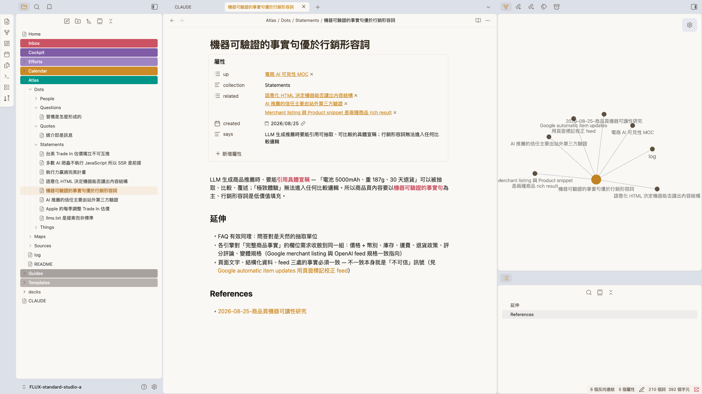
看起來不一樣，檔案是同一個Obsidian 只是一種看的方式 —— 換任何一個軟體打開，字一個都沒少。
69
知識管理
知識管理越用越省力
這套東西 —— 越用越省力，不是越用越亂。
每跑一次 [研究] 或 [歸檔] ——
· Atlas 多幾張卡
· 它更知道你手上已經有什麼
· 下次查同一類的，從你有的接著往下
· 同一件事不會查第二次
今天查過官網 SEO —— 下次要追競品的商品頁怎麼寫，它會先說「這塊你已經有幾張了，我接著補」。
一個人查十次是十次從頭。這套跑十次，第十次是站在前九次上面。
70
知識管理
CAPSTONE從查到存 · 一次跑完
換你自己的題目 —— 從查到存，跑一次完整的。
先挑題 · 三類裡挑一個
A
不會過期的那種
這類事情的道理是什麼 —— 查一次，半年後還對。剛才那題就是。
B
會變、但你還是得知道的
規定、價格、規格 —— 會改版，但存起來，下次重查是從你有的接著往下。
C
這週正卡住的那件
還在查、查到一半沒查完的那個。
「形狀」怎麼寫？照剛才那句：「我要的是原則，不是現在哪家排第一」—— 把你要的跟你不要的都講出來。
① 先開一個新對話 · 再把中括號換成你自己的
> [研究] 【你的題目】。我要的是【原則／現況／做法】，不是【你不想要的那種】。查完把完整報告存到 Inbox。
② 查完再存 · 這行不用改
> [歸檔] 我剛剛存到 Inbox 的那份研究
③ 跑完打開 Atlas，看多了什麼
Sources/ 多一份原文 ・ Dots/ 多幾張卡
Maps/ 可能多一張 ・ log.md 多一筆紀錄
Maps/ 可能多一張 ・ log.md 多一筆紀錄
先開新對話（⌘ N）—— 舊的那串還記著剛剛那題，會干擾。
15:00
71
知識管理
接上信箱行事曆午休前 · 最後一段
前面它只讀你電腦裡的檔案 ——
現在讓它連上你的信＋行事曆。
現在讓它連上你的信＋行事曆。
兩個都在昨天裝環境時接好了 —— 今天不用裝。
這一段直接用它：讀你的信、查你的行事曆。
這一段直接用它：讀你的信、查你的行事曆。
兩段動手 · 各 6 MIN
72
接上信箱行事曆
EMAIL · 讀 + 草擬昨天已接上 · 6 MIN
你的信 —— 讓它讀，還幫你草擬回覆。
活動 ① · 讀
複製 · 貼進 Claude Code · ENTER
> 讀我今天的信，挑出今天需要回的，
一句話說明每封為什麼。
活動 ② · 幫你草擬
複製 · 貼進 Claude Code · ENTER
> 挑最急的那封，幫我草擬回覆 ——
先給我看，我同意後放進草稿匣、我自己送出。
讀 + 草擬
06:00
讀到 + 草擬出 = 成功
草稿放在草稿匣 —— 送不送出去，你自己決定。
73
接上信箱行事曆
行事曆 · 動手昨天已接上 · 查 + 建 · 6 MIN
換你 —— 讓它查行程，再幫你建一筆。
活動 ① · 查 —— 複製 · 貼進 Claude Code · ENTER
> 查我今明的行事曆，這週還有哪些行程、哪裡有空檔。
活動 ② · 建 —— 複製 · 貼進 Claude Code · ENTER
> 幫我建一筆行程：8/26「AI 內訓」· 09:30–16:30。
查 + 建
06:00
查到 + 建好 = 成功
建的是你自己的行事曆、沒約別人 —— 建完打開行事曆看一眼，那筆真的在。
74
接上信箱行事曆
連上了你剛剛證明了什麼
你剛剛證明了 —— 它讀你的信＋行事曆，還幫你動手。
✓ EMAIL · 公司信箱
讀信、也幫你草擬回覆
挑出今天要回的、草擬好放進草稿匣 —— 送不送你決定。
昨天裝好 · 在 Claude Code
✓ 行事曆
查行程、也幫你建一筆
查得到這週的空檔、建得了你自己的行程 —— 行事曆打開就看得到。
昨天裝好 · 在 Claude Code
上午到這裡收工檔案、知識庫、信＋行事曆 —— 都在同一個工作環境裡了。午休 60 分鐘 · 13:30 回來 —— 建立自己的 Skill、生一份公司簡報，再做一塊競品監控板。
75
接上信箱行事曆
建立 Skill你一直在用一個東西
上午用的 [研究] 跟 [歸檔] ——
它們到底是什麼？
它們到底是什麼？
都叫 Skill —— 別人寫好、你一句話就能用。
這一段換你親手做：先把手上的抽成三個，再做一個你們部門自己的。
這一段換你親手做：先把手上的抽成三個，再做一個你們部門自己的。
建立 Skill · 13:30 開跑
76
建立 Skill
建立 Skill · 揭曉誰在背後做事
你以為是 Claude 自己做 —— 其實是一個 skill。
你以為
Claude 自己上網查、自己把文章拆成卡片。
其實不是。
背後 · 一個 skill ＝ knowledge-keeper
你打 [研究]／[歸檔] —— 是 knowledge-keeper 這個 skill 接手，照你教它的步驟做完。
你不用記 skill 名字 —— 說「[研究]…」它自己就跳出來上工。
上午你叫的 [研究]、[歸檔] —— 都是 knowledge-keeper 這一個 skill 在背後跑。
77
建立 Skill
建立 Skill · 是什麼教一次、多一個員工
Skill ＝ 把一整套做法，「教」給 Claude 一次。
Claude 本身
通用助手 —— 什麼都會一點，但不知道你們公司怎麼做事。
像剛到職的工讀生 —— 能力不差，但規矩要一條條教、每次重講。
裝上 skill
把「你的流程、標準、偏好」教進去 —— 它就照你的方式做。
像待了三年的老手 —— 你說一句，他知道整套怎麼跑。
幫 Claude 裝一個 skill ＝ 多一個資深員工。 knowledge-keeper ＝ 你的研究員 —— 等一下，你會自己做出第二個、第三個。
78
建立 Skill
建立 Skill · 結構就是一個資料夾
一個 skill —— 就是一個 資料夾。
你的 vault/
└─ .claude/skills/
└─ 你的 skill/
├─ SKILL.md ← 主要指令（必要）
├─ scripts/ ← 可執行的腳本（選用）
├─ references/ ← 參考文件（選用）
└─ assets/ ← 模板（選用）
這是 Claude 的標準 skill 結構 —— 每個 skill 都這長相：SKILL.md 必要，其他三個要用才加。上午的 knowledge-keeper 就是一個。
最少 —— 一個檔就是 skill
只有 SKILL.md 必要，其他都是要用才加的選配。很多 skill 就這一個檔。
就是一個資料夾
整包複製／壓縮就能分享 —— 丟進 .claude/skills/ 就生效。
想更深入？skill 怎麼運作、怎麼寫得好 —— 完整教學在這篇。
yu-wenhao.com/zh-TW/blog/claude-skills-guide ↗
79
建立 Skill
建立 Skill · SKILL.md封面 + 你的 SOP
打開 SKILL.md —— 上面封面、下面 SOP。
---
name: knowledge-keeper
description: 知識庫助手。兩個暗號：
[研究] 收集網路資料、
[歸檔] 拆成知識卡片。
當使用者說「[研究] XXX」…時使用。
---
# 知識庫助手
## 工作流程 — [研究]
1. 先查你存過的 2. 再補外部
3. 讀多來源、整合 4. 進 Inbox
封面（--- 之間的區塊）
name ＋ 觸發語 —— Claude 靠這段判斷要不要啟動（就是 [研究]／[歸檔] 兩個暗號）。
本體（下面的 Markdown）
就是你的 SOP —— 規則 ＋ 一步步流程。
上面封面、下面 SOP —— 你看得懂，就寫得出。
80
建立 Skill
建立 Skill · 為什麼值得一次寫好、天天省
為什麼值得做成 skill？
對你 —— 事情做得穩、做得快
穩品質
今天這樣講、明天那樣講，做法就跑掉。寫成 skill ＝ 標準化 SOP ＋ 產出模板 —— 流程同一套、格式同一份。
省力
不用每次重講背景 —— 一句話觸發，一次寫好、天天省。
對它 —— 腦袋不塞爆
省 context（token）
平常不佔位、用到才載入 —— 不塞爆 Claude 的工作記憶。
顧注意力
塞越多、它越抓不住重點 —— 省下來，注意力留給當下這件事。
一次寫好 —— 穩品質、省力、省 context、又顧注意力。 正式名 Agent Skills · 開放標準。
81
建立 Skill
建立 Skill · 解構開工 對照 真 skill
「開工」對照真 skill —— 同一個形狀。
還記得剛剛 knowledge-keeper 的 SKILL.md 嗎？把你早上跑過的「開工」擺旁邊看 —— 一模一樣。
✅ 已經是 skill住在 .claude/skills/
knowledge-keeper/SKILL.md
---
name: knowledge-keeper
觸發語：[研究] ／ [歸檔]
---
## 工作流程 — [研究]
1. 先查你存過的 2. 補外部
3. 整合成報告 4. 進 Inbox
⚠️ 還不是 skill還住在 CLAUDE.md
CLAUDE.md —— ## 開工 這段
## 開工
觸發語：「開工」「規劃今天」「早安」
### 流程
1. 確認日期 ＋ 檢查 git
2. 回顧最近 daily、盤點待辦
3. 掃 Efforts ／ Inbox 可做的事
4. 討論後建立 Daily Note
兩邊都是 觸發語 ＋ 步驟 —— 同一個形狀，差別只在住哪。 把開工搬進 skills/ —— 就是真 skill。
82
建立 Skill
建立 Skill · 動手打開你的 CLAUDE.md · 3 MIN
換你 —— 打開你自己的 CLAUDE.md。
1
檔案列表最上層 —— 點開 CLAUDE.md
早上讀過的那份說明書 —— 它每次上工前讀的就是這份。
2
往下捲，找到 ## 開工 那段
觸發語＋流程 —— 跟剛剛投影的一模一樣，真身就在你機器上。
3
再看看還住著誰
## 收工、## WAM —— 上午講過的收工跟結算本週，都住在這。
邊翻邊勾 —— 三個都找到了嗎
☐ ## 開工 —— 每天早上跑的那段
☐ ## 收工 —— 每天收帳的那段
☐ ## WAM —— 每週結算的那段
每個人的檔案不完全一樣 —— 三段都在就好。
三段都擠在同一份檔案裡 —— 接下來，把它們一個個搬家。
03:00
83
建立 Skill
建立 Skill · 抽三個同一招 · 抽 3 個
開工、收工、結算 —— 都還在 CLAUDE.md。
現在，全抽成 skill。
現在，全抽成 skill。
同一招 —— 抽 3 個。一段 prompt 照貼，Claude 幫你搬。
建立 Skill · 抽 routine
84
建立 Skill
建立 Skill · 升級開工變 skill · 還加料
升級開工 —— 變 skill、還加料。
今天早上的開工 · 你跑過
只盤點任務
→
升級開工
+ 過去 24h 的信，挑出要回的
+ 今天＋明天行程
+ 盤點任務
+ 今天＋明天行程
+ 盤點任務
開工你早上跑過、收工跟結算也講過了 —— 同一招、三個都抽成 skill，下面三頁一段 prompt 照貼。
85
建立 Skill
動手 ①把開工變 daily skill · 5 MIN
動手① —— 把 開工 變 skill、加料。
複製 · 貼進 Claude Code · ENTER
> 讀我 CLAUDE.md 裡「## 開工」那一整段，做成一個叫「daily」的 skill，建在這個 vault 裡：
· 說「開工／規劃今天／早安」任一句就自動啟動
· 步驟照「## 開工」原本的做，別漏也別改
· 盤點任務前多加兩步：
① 用 email skill 抓過去 24h 信、挑要回的
② 用 calendar skill 看今天＋明天行程
· 每件事後面標一個顏色：🟢 你直接做完（不外發／不刪唯一一份／只動我的檔案，三條都成立）· 🟡 你備料我拍板 · 🔴 我自己做 · ⚪ 今天不動
· 建好後「## 開工」那段換成一句「已做成 daily skill」，其它別動
💡email、calendar 就是上午讀信、查行程的那兩個 skill —— 現在 daily 會叫它們上工：skill 跟 skill 會自己組起來。
daily
05:00
跑完 · 打開這兩處確認
① .claude/skills/ 裡多了 daily/ 資料夾
② CLAUDE.md 的「## 開工」→ 只剩一句話
86
建立 Skill
動手 ②把收工變 eod skill · 5 MIN
動手② —— 把 收工 變 skill。
複製 · 貼進 Claude Code · ENTER
> 讀我 CLAUDE.md 裡「## 收工」那一整段，做成一個叫「eod」的 skill，建在這個 vault 裡：
· 說「收工／回顧今天／下班了」任一句就自動啟動
· 步驟照「## 收工」原本的做，別漏也別改
· 建好後「## 收工」那段換成一句「已做成 eod skill」，其它別動
收工是開工的鏡像、更快 —— 同一個模板換一段。
eod
05:00
跑完 · 打開這兩處確認
① .claude/skills/ 裡多了 eod/ 資料夾
② CLAUDE.md 的「## 收工」→ 只剩一句話
87
建立 Skill
動手 ③把結算本週變 wam skill · 5 MIN
動手③ —— 把 結算本週 變 skill。
複製 · 貼進 Claude Code · ENTER
> 讀我 CLAUDE.md 裡「## WAM」那一整段，做成一個叫「wam」的 skill，建在這個 vault 裡：
· 說「結算本週／週會／週末收尾／lock 下週」任一句就自動啟動
· 步驟照「## WAM」原本的 6 個步驟 做，別漏也別改
· 建好後「## WAM」那段換成一句「已做成 wam skill」，其它別動
結算步驟最多（6 步）—— 讓它先讀一遍再做、別漏。
wam
05:00
跑完 · 打開這兩處確認
① .claude/skills/ 裡多了 wam/ 資料夾
② CLAUDE.md 的「## WAM」→ 只剩一句話
88
建立 Skill
建立 Skill · 驗收開新的 · 驗三個 · 6 MIN
開個新的 —— 讓三個 skill 真的接手。
你剛把「開工／收工／結算」三段都換成一句話了 —— 每件事現在只剩 一個來源：skill。
先做這件事
開一個新的 Claude Code
（舊的不用關）
（舊的不用關）
06:00
在新的那個 · 各說一次 → 看它自己跑
說「開工」→ 有抓信、看今明行程、排今天
說「收工」→ 有照流程跑
說「結算本週」→ 它有跳出來、開始問本週？（認得、跳出來就成了 —— 真的結算回去每週做）
三個都喊得動 ＝ 接上了 ✓
為什麼要開新的：CLAUDE.md 是 Claude 一開機就讀進去記著的。你中途改了，這次開著的還記得舊版 —— 開個新的，它才讀到新版、skill 才真正接手。
89
建立 Skill
建立 Skill · 盤點你的 skill 團隊
現在 —— 你有 6 個 skill。
昨天裝好的 · 3
knowledge-keeper[研究]／[歸檔]
email讀信 · 草擬進草稿匣
calendar查行程 · 建行程
＋
剛剛你親手抽的 · +3
daily開工 + 信 + 行程
eod收工
wam結算本週
從別人寫的 —— 到自己抽的。
6 個 skill —— 有的喊一聲幫你跑（開工／收工／結算），有的守在旁邊叫到才上（讀信、查行程、研究歸檔）。
90
建立 Skill
建立 Skill · 三階做 skill · 你會到哪一階
做一個 skill —— 你已經會 兩種做法了。
手上這 6 個 skill、兩種來歷 —— 但最關鍵的第三種，你還沒試過 ——
① 拿現成的用 · 會了 ✓
別人寫好的，直接用
昨天裝的那幾個 —— 不用懂怎麼做，喊一聲就跑。
knowledge-keeper · email · calendar
② 把手邊的抽出來 · 剛做 ✓
現成的流程，抽成 skill
你 CLAUDE.md 裡本來就有的「開工／收工／結算」—— 搬進 skills/。
daily · eod · wam
③ 從一張白紙做一個 · 接下來
沒人寫過的，從零長出來
不抄現成、不靠別人 —— 一個你們部門專屬的 skill。
接下來 ▶ 兩題連做
前兩種你都會了 —— 最後一種：從一張白紙，自己長一個出來。
91
建立 Skill
建立 Skill · 第三階從白紙包出來
最後一階 —— 從白紙，
包出自己的 skill。
包出自己的 skill。
兩個題目 —— 都是你們天天遇到的事。
一個一個來：先電商的、再行銷的 —— 全員兩題都做。
一個一個來：先電商的、再行銷的 —— 全員兩題都做。
建立 Skill · 兩題實戰
92
建立 Skill
建立 Skill · 兩題先電商的 · 再行銷的
兩個題目 —— 一個一個來，全員都做。
題一 · 先做
商品頁 SEO 健檢
上午查回來的原則，變成一鍵健檢 —— 貼一個商品頁網址，逐條對、出診斷報告。流程最短 —— 先用它練會「包」這套手。
檢核清單→掃商品頁→出診斷
skill 名 seo-audit · 觸發語「商品頁健檢」
題二 · 再做
需求信 → 美術需求單
各部門的需求信天天來、封封都寫很急 —— 現在靠人工：收信、消化、回信追缺件、發需求。多一手 —— 動手前，先全班把「單」定版。
skill 名 design-request · 觸發語「整理需求信」
兩題同一套做法 —— 給它料 → 包成 skill → 做一次對答案。做完兩輪，這套手就是你的。
93
建立 Skill
題一 · 商品頁健檢動手① · 收斂檢核清單 · 4 MIN
把上午的卡 —— 收斂成一張檢核清單。
複製 · 貼進 Claude Code · ENTER
> 讀 Atlas 裡「電商 AI 可見性 MOC」連到的那批卡片，收斂成一張「商品頁檢核清單」——
每一條寫：檢查什麼、怎樣算過、依據哪張卡。
建立 .claude/skills/seo-audit/，存成 assets/檢核清單.md，存好唸給我聽。
這一步在做什麼
這就是 skill 的「料」—— 存進 assets/，之後每次健檢都照它
清單的依據是你們上午自己歸檔的那批卡 —— 不是我給的
它唸清單時聽一下 —— 有哪條不對勁，用講的改
清單進了 assets —— 下一步，把做法包上去。
04:00
94
建立 Skill
題一 · 商品頁健檢動手② · 包成 skill · 4 MIN
把做法包上去 —— 建 SKILL.md。
複製 · 貼進 Claude Code · ENTER
> 我要建一個商品頁的 SEO 健檢 skill。
觸發語：「商品頁健檢」。
① 我給商品頁網址 ② 抓頁面原始碼
③ 對照 assets/檢核清單.md 逐條檢查
④ 診斷報告存 Inbox：過／不過 · 證據 · 怎麼改
→ 建好唸流程給我聽
最後那句是驗收 —— 它唸的流程，就是你要的？不對就用講的修，修到你點頭，才進下一頁試做。
跟剛剛的 daily 同一件事 —— 只是這次的 SOP，從頭到尾是你們自己的。
04:00
95
建立 Skill
題一 · 商品頁健檢動手③ · 試做對答案 · 6 MIN
做一次對答案 —— 拿自家官網試。
⚠️先開一個新的 Claude Code（跟剛剛驗三個一樣）—— skill 是開機才掃進來的，舊視窗還不認得剛建好的 seo-audit。
在新視窗 · 挑一頁自家商品頁 · 把中括號換成網址 · ENTER
> 商品頁健檢：【你挑的官網商品頁網址】
💡跑完還有時間 —— 找一頁 momo 同款商品頁再跑一次，兩份報告擺一起看差在哪。
對答案 · 上午的硬傷該被抓到
description 空白 —— 該報不過
H1 是「商店」—— 該報不過
沒有 Product 結構化資料 —— 該報不過
三條都抓到 ＝ 你的檢核清單是真的。報告存在 Inbox —— 就是回去改官網的工單。
06:00
96
建立 Skill
題二 · design-request這個 skill 怎麼跑
流程沒變 —— 變的是中間兩步誰做。
現在 · 全靠人工
收信
→
消化
最花時間
→
回信追缺件
最花時間
→
發需求給美術
之後 · design-request —— 虛線那兩步，它做
收信
你
→
抽欄位 · 對照需求單
SKILL
→
必填
齊了嗎
齊了嗎
齊 ✓→
填好單 · 草擬給美術的信
SKILL
→
美術收單開工
草稿匣 · 你送出
↓缺 ✗
↑ 對方補齊
回到這步、再跑一次
回到這步、再跑一次
←
回問信草稿 → 草稿匣 · 你送出
半殘的單，到不了美術那格
兩條路都收在草稿匣 —— 回問的信、給美術的信，都是你看過才送。Claude 草擬、你決定 —— 跟上午一樣。
97
建立 Skill
題二 · 整理需求信投影幕是板 · Claude 是筆
先把「單」定下來 —— 你們是天天做的人，改它。
1
我先擬了一版草案（v0.9）
現在投影出來 —— 六個區塊、必填選填，逐欄唸過。
2
有意見直接喊
我講給 Claude，它當場改 —— 全場看著單被改完。
3
定版 —— 記錄成「美術需求單 v1」
然後傳進 LINE 群組 —— 等一下每個人都要用它。
黃標那兩欄一定有意見，先想好答案：① 各通路的尺寸標準表有沒有現成的？② 「急件」門檻幾個工作天、要不要主管知情？
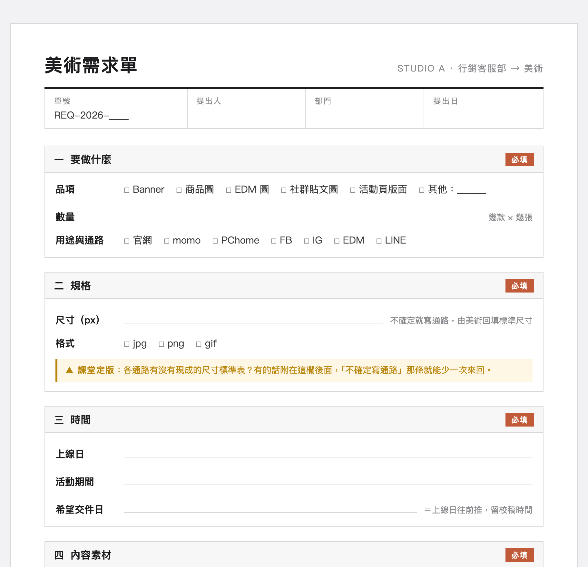
v0.9 草案 —— 定版後，這張就是部門跟美術的標準溝通單
定版那一刻，規則就寫死在單上 —— 必填缺一項不轉單 · 美術只收單不收信 · 單就是全部。
98
建立 Skill
題二 · 整理需求信動手① · 交代需求 · 8 MIN
把需求交代給它 —— 對完流程，才准建。
先做一件事：LINE 存下「美術需求單模板.html」→ 自己拖進 inbox/（跟上午丟檔進 Inbox 同一個動作）
複製 · 貼進 Claude Code · ENTER
> 我要建一個新的 skill，叫「design-request」—— 接手需求信 → 美術需求單。我的需求：
· 觸發語「整理需求信」「開需求單」
· 信的來源不固定：貼內容／去信箱讀／.eml 丟 inbox —— 都要能吃
· 模板就是 inbox 裡的美術需求單模板.html —— 收進 skill 的 assets/
· 必填缺 —— 不出單：列缺什麼、回問信進草稿匣
· 都齊了 —— 照模板把單填好，草擬給美術的信進草稿匣：標題＋一句話簡述＋附上單
· 先不要建 —— 流程列給我看，我確認 OK 你再寫成 SKILL.md
它會先列流程 —— 你逐條對
缺件那條路有沒有？—— 缺 → 回問信進草稿匣、不出單
齊了那條路 —— 有沒有填好單 ＋ 草擬給美術的信（標題＋簡述）進草稿匣
模板 —— 有沒有從 inbox 收進 assets/
跟剛剛投影的那張圖對 —— 逐條 OK 才說「可以，建吧」。先教到會，再固化。
08:00
99
建立 Skill
題二 · 整理需求信動手② · 自己測 · 6 MIN
建好了 —— 換你自己測。
⚠️一樣先開新的 Claude Code —— 舊視窗還不認得剛建好的 design-request。
餵它一封真的 —— 三種餵法，挑一種
1
去信箱挑一封真的需求信
跟它說：「整理需求信 —— 讀我信箱裡〈那封的主旨〉」。
2
或者 —— 自己用講的出一封
把平常那種「很急、但什麼都沒講清楚」的信，描述給它。
3
或者 —— .eml 檔丟進 inbox/
丟完說一聲「整理需求信」。
對答案 · 三件事
缺件的信 → 不出單 —— 回問信躺在草稿匣
齊的信 → 單填好、給美術的信躺在草稿匣 —— 標題＋簡述＋單
打開那封信看一眼 —— 標題看得出是哪個需求？簡述像你會寫的？
它做的跟你天天做的一樣 —— 才算過。不一樣的地方，用講的修。
06:00
100
建立 Skill
建立 Skill · 收尾抽 1–2 人秀成品
你們每個人 —— 多了兩個自己包的 skill。
題一 · seo-audit
網址貼進來 → 診斷出來 —— 依據是你們上午存的卡。
題二 · design-request
信進來 → 單填好、給美術的信進草稿匣 —— 缺件它先追，送出的都是你。
抽 1–2 人 · 開成品給大家看
講一句就好 —— 它抓到什麼、你改了什麼。
沒走完的 —— SKILL.md 都在你的 vault 裡，回去接著調；調的方法就是用講的，跟今天一樣。
這兩個 skill —— 是今天真正帶得走的東西。之後題目再來，你們已經會包了。
101
建立 Skill
生簡報下午 · 第二段
查到的、做到的 ——
還要講出去。
還要講出去。
查回來的進了 Atlas、教會它的變成了 skill —— 但月會上、主管面前，這些得變成一份講得出去的簡報。這一段，多開一張工作台。
生簡報 · 35 MIN
102
生簡報
生簡報 · 痛點還剩一段手工
查有人幫了、skill 也會包了 —— 簡報，還是自己一頁一頁做。
① 想講什麼
給誰看、講哪幾件、順序怎麼排 —— 全在你腦子裡，還沒成形。
② 做出來
每頁的標題、內容、配圖，再排成版面 —— 一頁一頁手工。
這一段 —— 把這兩步手工交出去：你出判斷，它出苦工。
103
生簡報
生簡報 · 這一段的路第二張工作台
交給 Claude Design —— 它照稿排版。
不是新軟體 —— 同一個 Claude，在網頁上的設計工作台，瀏覽器打開就有。它照稿排版 —— 不幫你決定要講什麼。
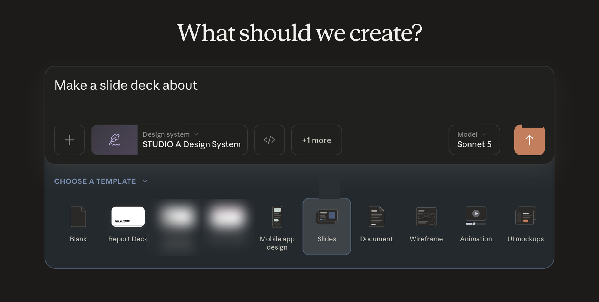
你給它兩樣 · 做好一樣勾一樣
☐ 公司規格 —— 長什麼樣
☐ 內容稿 —— 想講什麼
它還你
整份投影片
一生出來就是公司的樣子
順序這樣走 —— 先把公司規格建進去（只建這一次），再回頭寫稿，最後一次生成到位。
104
生簡報
生簡報 · 第 0 步公司的樣子
「公司的樣子」—— 存成一套規格。
logo、配色、字型、版型 —— 存成一套規格。Design 讀了它，生出來的每一份自動就是公司的樣子。建一次、全公司用。
SA
logo
商標、放哪、留邊
配色
白 · 近黑 · 一點 A 藍
AaAa
字型
公司指定的那套黑體
間距 · 版型
大留白 · 一頁一重點
150
元件樣式
封面 / 大數字 / 卡片
Design 在網頁上 —— 看不到你電腦裡的檔案。規格檔我們做好了，下一頁直接匯進去。
105
生簡報
生簡報 · 動手①下載 · 建立
跟著做 —— 先把 STUDIO A 的規格建起來。
① 先下載這套 →
↓
STUDIO A · 公司規格
STUDIO_A_design-system.zip
72 KB · 解壓後 70 個檔
② 解壓 → 開 claude.ai/design（剛剛看過的那頁）→ 照下面兩步。
1
Design systems → Create design system

2
選 Create here
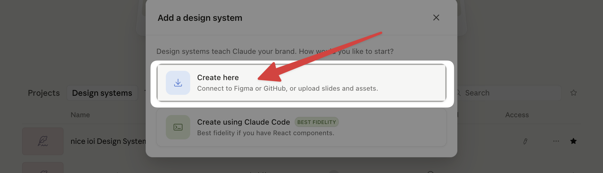
下載＋兩步點完就好 —— 檔案下一頁拖。
106
生簡報
生簡報 · 動手①拖檔 · 發佈 · 5 MIN
解壓的檔案拖進去 —— 它自己生。
3
解壓出來的檔案拖進 Add fonts, logos and assets → Continue
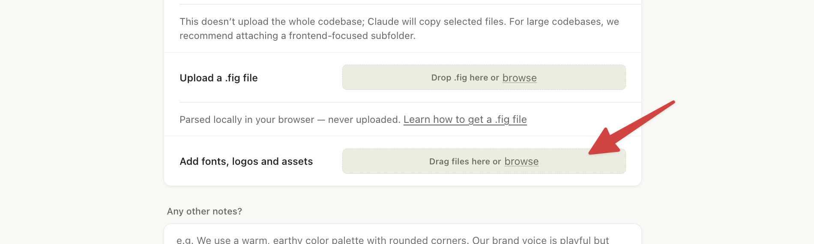
4
按 Continue 後它自己生成 5–8 分鐘 —— 這段等待我們拿來寫稿，先往下。

好了回來勾 Published —— 等下生投影片時，才選得到這套規格。
按出 Continue 就算完成 —— 生成讓它自己跑，第一樣 公司規格 ✓。卡住 —— 我在桌邊。
05:00
107
生簡報
生簡報 · 第①步想講什麼
✓ 公司規格☐ 內容稿 —— 這一步
想講什麼 —— 跟 Claude Code 討論出來。
你
這兩天 Mac mini 剛發佈 —— 做一份給門市跟電商同事的新品說明，9/22 到貨前，大家把資訊搞清楚。
Claude
那先講結論。我排一版故事線 —— 5 頁：一句話總結、規格對照、售價與時程、要注意的、資料來源。
你
規格對照 —— 跟上一代並排成表格，一頁一張講清楚。
Claude
排好了。每頁配好標題跟重點 —— 你看順序對不對。
這段討論裡 · 誰出什麼
你出判斷 —— 給誰看、要他做什麼、哪些能講 —— 只有你知道
它出草稿 —— 故事線、幾頁、每頁的標題跟重點 —— 你點頭才算數
討論定案，存成一份 —— 內容稿。
108
生簡報
生簡報 · 動手②查＋寫稿一次跑 · 10 MIN
換你 —— 這波 Mac mini 發佈，叫它查清楚、寫成內容稿。
複製這一段 · 貼進 Claude Code · 按 ENTER
> [研究] 這一波 Mac mini 新品發佈：改了什麼、售價、預購與到貨時間。
查完不用歸檔，直接整理成 5 頁簡報的內容稿：一句話總結、規格對照（跟上一代並排成表格）、售價與時程、要注意的事（只寫查得到的，不確定就標 ⚠️）、資料來源，每頁寫清楚標題跟重點。
這份是給門市跟電商同事的新品說明，資訊整理清楚就好。寫好存到 Inbox。
對象、段落想換？直接改字再送 —— 改成你真的要報的場合就好。
按出去就算完成 —— 它查它的，我們往下講；跑完 Inbox 多一份內容稿。
10:00
109
生簡報
生簡報 · 範例它查的時候 · 先看我跑好的
內容稿長這樣 —— 一頁一段，全是中文。
# Mac mini 新品發佈簡報內容稿（門市電商版）· 5 頁
給誰看：門市＋電商同事 —— 9/22 到貨前，把資訊搞清楚
——— 逐頁 · 每頁標題＋重點 ———
P1 一句話總結 —— 晶片全面升級、外觀不變；起價比兩年前貴 50%
P2 規格對照 —— M6 vs M4、M5 Pro vs M4 Pro 並排成表；話術：這代沒有「M6 Pro」
P3 售價與時程 —— 兩年調價三次（表）；台灣 8/27 預購、9/22 到貨
P4 要注意的事 —— 供貨吃緊是最大變數；到貨時間先別給死承諾
P5 資料來源 —— 官方新聞稿、規格頁、台美媒體逐條列
⚠️ 4 處標了「還不確定」—— 介紹時不講成確定事實
這份稿的四個特徵
一頁一段 —— 每段就是一頁，標題＋重點都排好
全是中文 —— 沒有半行排版指令
順序照你要講的講 —— 版面交給 Design
不確定的標 ⚠️ 出來 —— 不硬掰，跟上午的報告同一個規矩
你的那份正在生 —— 跑完打開，對這四個特徵。對不上，用說的改。
110
生簡報
生簡報 · 第②步換工作台
✓ 公司規格✓ 內容稿 —— 兩樣都齊
把稿子帶到 Design —— 這次連規格一起掛。
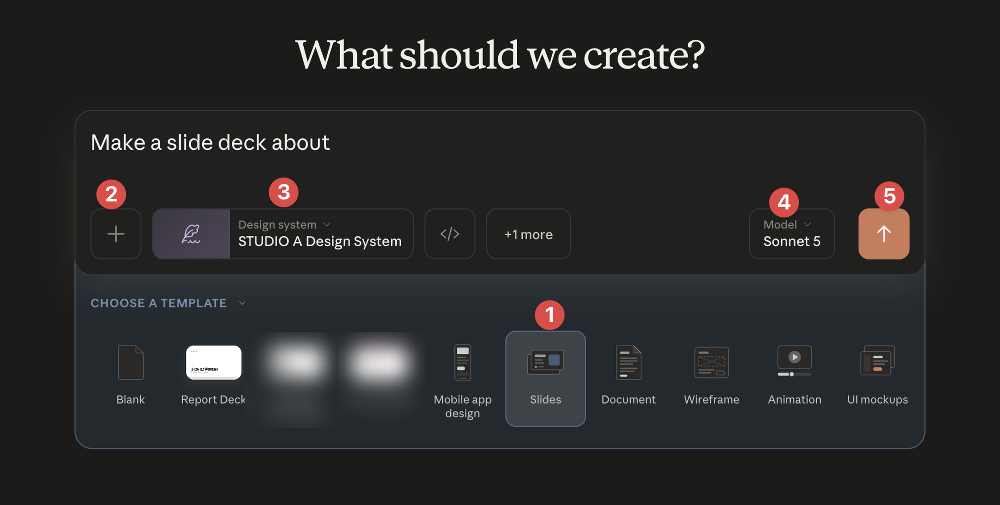
① 選 Slides
模板列點 Slides
② 夾內容稿
按 ＋，夾上 Inbox 那份內容稿
③ 掛規格
Design system → STUDIO A（剛匯的）
④ 選 Model
選 Sonnet 5 —— 快，課堂剛好
⑤ 送出
按 ↑ —— 一頁頁長出來，按出去就算完成
111
生簡報
生簡報 · 成品先看就是剛才那份稿
生出來的 —— 長這樣。
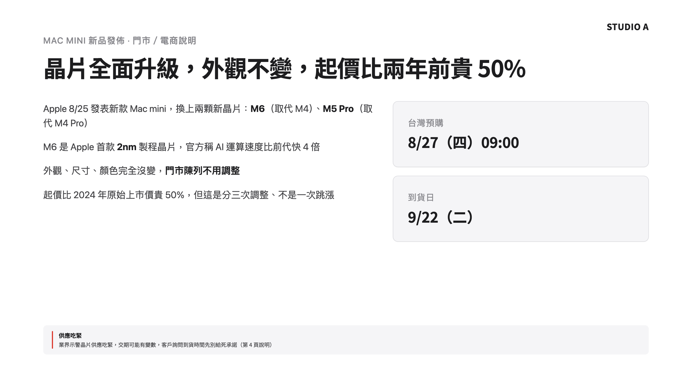

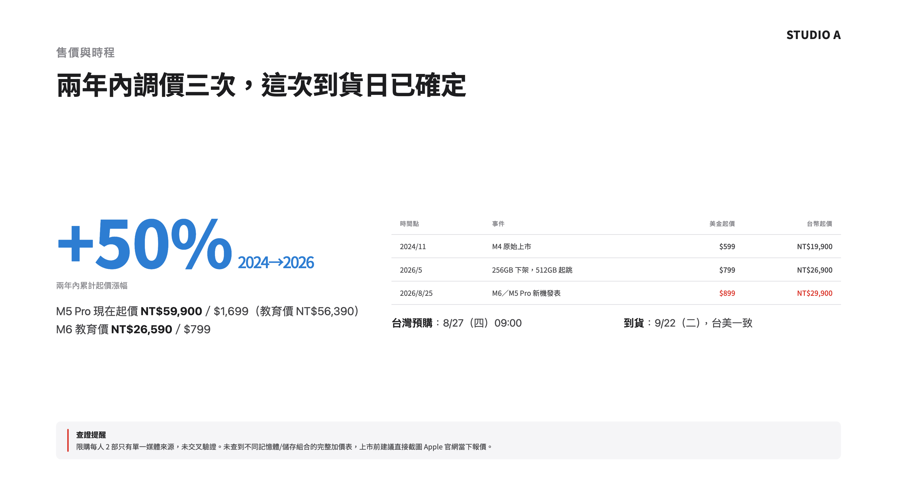


就是剛才那份內容稿 —— 5 段、5 頁：規格對照表、調價時間軸、查證提醒，全是它排的。掛了公司規格 —— 一眼是 STUDIO A。
生成讓它跑 —— 好了就開來看。還有最後一手：把它抓回你電腦。
112
生簡報
生簡報 · 最後一手抓回你電腦
生好的簡報住在雲端 ——
把它抓回你電腦。
把它抓回你電腦。
抓回來，檔案就是你的：開本機 server 就能看、存進你的工作資料夾。要改字、要加頁 —— 跟 Claude Code 講就好，跟今天改其他檔案一樣。
設定一次 · 以後丟 zip 就收
113
生簡報
生簡報 · 動手③設定一次 · 3 MIN
設定一次 —— 以後丟 zip 就收好。
教它這條規則 —— 寫進 CLAUDE.md，以後它就認得
複製這一段 · 貼進 Claude Code · 按 ENTER
> 幫我在 CLAUDE.md 加一條規則：以後我給你一個從 claude.ai/design 下載的簡報 zip，
或跟你說「打開這份簡報」，就把 zip 解壓到 Presentations/簡報名稱/，主檔存成 index.html。
開一個本機 server 並直接打開瀏覽器（不要雙擊 file:// 開，也不要只把網址貼給我）。
zip 在哪？Design 裡 Share → More formats and apps → Project HTML → Project archive —— 不用授權、不用登入什麼。
之後每一份：下載 zip → 拖進 Claude Code、說「打開這份簡報」 —— 它會自己開本機 server、開瀏覽器，◀▶ 翻頁。
03:00
114
生簡報
生簡報 · 動手④投影實戰 · 5 MIN
投影上來 —— 直接在 Claude Code 改。
跟著做一次 —— 把螢幕 AirPlay 投上大螢幕
複製這一段 · 貼進 Claude Code · 按 ENTER
> 幫我把這份簡報第一頁改成 Hero 頁：去抓一張 Mac mini 官方商品圖，去背，
放大置中當背景，標題疊上去，其他文字先拿掉。
改的是同一份 index.html —— 存檔、瀏覽器重新整理就看得到，跟你剛剛開的本機 server 是同一份。
投影片不是做完就死的檔案 —— 想到什麼、跟 Claude Code 講，它就幫你改，改完重新整理就看到。
05:00
115
生簡報
休息一下5 分鐘 · 回來接著做
休息
05:00
站起來走一走、喝個水。
回來是最後一段 —— 做一塊競品比價板。
一樣不用寫程式，全部交給 Claude Code。
回來是最後一段 —— 做一塊競品比價板。
一樣不用寫程式，全部交給 Claude Code。
電腦別關 · VS Code 跟 Claude 開著
116
休息
競品監控板下午 · 最後一段
簡報講出去了 ——
現在幫自己做一塊會自己動的板。
現在幫自己做一塊會自己動的板。
今天你已經有 AI 工作環境、知識庫、會建立 Skill、還生出一份公司規格的簡報。最後一段——競品比價板：每週一早上，自動去抓 STUDIO A、momo、PChome 的價格，排成一張表。你不寫一行程式，全部交給 Claude Code。
競品比價板 · 15:30 起
117
競品比價板
競品比價板 · 成品做完之後長這樣
它長這樣 —— 真的在線上跑。
competitor-board.你的子網域.workers.dev
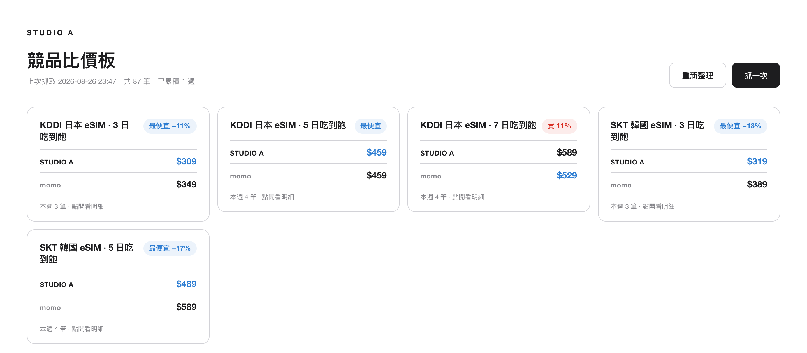
已經在跑
一張卡一個產品、徽章就是結論 —— 每週一自動再抓一次，數字會一直長。
兩家並排
STUDIO A 和 momo 排在一起，貴多少百分比它算給你看，不用自己心算。徽章紅的，就是要處理的。
點得進去
賣家名和品名是連結，數字覺得怪，點進去對到真的商品頁。
同一個網址 —— 你、你主管、你的 Claude，看到的都是同一份即時資料。
118
競品比價板
競品比價板 · 情境為什麼自己做
查價這件事 —— 我們要的是 三件事。
① 一眼掌握全平台
不用自己一家一家開網站比 —— 打開就是排好的表。
② 跟 AI 一起抓、一起算
每天單價、貴多少百分比 —— Claude 幫你算好，不用自己拿計算機。
③ 每週自己更新
不是查一次就過期的快照 —— 週一早上自動再抓一次。
今天這件事一次解決 —— 自己做一塊會自己動的板。
119
競品比價板 · 為什麼自己做
競品比價板 · 路線三步 · 做完就帶走
三步 —— 每一步你都多一樣東西。
1 開門
辦雲端帳號
你多一把鑰匙
2 部署
板上線
你多一個網址
3 加功能
換成你要追的商品
要什麼自己加
三步走完 —— 你帶回去的不是練習作品，是一個下週一早上就會自己動的系統。
120
競品比價板 · 三步路線
競品比價板 · 上線環境為什麼要上雲
為什麼要 上雲？
有些東西放自己電腦沒問題 —— 這塊板不行。差別在哪？
放自己電腦沒問題的東西
— 自己用，用的時候才打開
— 檔案在你電腦裡，跟著你走
掛上雲 —— 競品比價板 這塊板
— 它要自己半夜去抓資料，電腦沒開也要跑
— 人在外面、在路上 —— 手機打開就是它
— 換電腦、重灌 —— 資料都在雲上
— 你的電腦會闔蓋、會關機 —— 板掛在雲上，24 小時都開著
判斷只有一句：這份東西，要不要隨時、每個裝置、連 AI 都碰得到同一份？要 —— 就上雲。
121
上線環境 · 為什麼上雲
競品比價板 · 上線環境兩個名字是什麼
上雲的地方 —— Cloudflare ＋ Durable Object。
兩個名字，等下會一直出現 —— 白話一次講清楚。
Cloudflare —— 掛網頁的地方
— 把你的網頁掛上網，給你一個網址
— 不用租主機、不用懂機房
— Claude 一個指令就上線
— 免費方案就夠，不用綁信用卡
Durable Object —— 存資料的抽屜
— 雲端的小資料庫，你這塊板專屬的一格
— 每週抓回來的價格存這裡、疊起來，不會愈存愈慢
— 誰開網址，看到的都是同一份
這兩樣你都不用先建 —— 部署那一下自己長出來。你只要記住：網頁掛 Cloudflare、價格存 Durable Object。
122
上線環境 · Cloudflare + Durable Object
競品比價板 · 上線環境要花錢嗎
要花錢嗎 —— 免費額度怎麼用都用不完。
免費額度給你多少
— 開板、看板（網頁本身）：不計次
— 每週抓資料、寫進資料庫：10 萬次／天
— 存放空間：5 GB · 更新程式不限次
— 免費方案 · 不用綁信用卡
我們其實用多少
— 一週抓一次、兩個平台 → 用掉十萬分之幾十
— 價格是文字，抓一年也不到 1 MB
— 改功能重新上線 → 免費方案沒有次數限制
順便記一個觀念：資料跟程式分家 —— 每週多一筆價格動的是資料庫，改功能才動程式。
123
上線環境 · 免費額度 · 資料程式分家
競品比價板 · 開門第一步 · 辦帳號 · 6 MIN
先開門 —— 辦帳號，把門牌立起來。
等下把板上線，需要兩樣東西：① Cloudflare 帳號（這頁辦） ＋ ② wrangler 上線工具（下一頁裝）
自己做兩步（瀏覽器）
① 用 email 註冊 —— 免費、免信用卡 —— 開 dash.cloudflare.com/sign-up；問你用途就按 Skip；驗證信沒收到，看垃圾信匣
② 登入後，左側欄點一下「Workers & Pages」 —— 你的網址門牌這時自動建立
（這一下不點，等下部署會拿不到網址）
（這一下不點，等下部署會拿不到網址）
驗收：進得了 Cloudflare dashboard ＝ 帳號好了。
老師巡場帶 —— 收不到驗證信、頁面長不一樣，直接舉手。
點完長這樣（新帳號實際畫面）

右下 Account Details —— Subdomain 出現值（例 zoe-33c.workers.dev）＝ 門牌好了，這段名字等下會出現在你的網址裡。
06:00
124
競品比價板 · 開門 · 辦帳號
競品比價板 · 開門第二樣 · 上線工具 · 6 MIN
再確認 上線工具跑得動 —— 跟 Claude 說一句。
wrangler 是什麼
把你的資料夾一鍵變成網址的上線工具。不用先裝 —— 用到才自己抓。真正要有的是 Node 22 以上；右邊那句貼給 Claude，缺什麼它幫你補。
複製這一段 · 貼進 Claude Code · 按 ENTER
> 幫我準備 Cloudflare 的上線工具，一步一步來，每步告訴我結果：
1. 先看我的 Node 版本夠不夠（要 22 以上）—— 不夠或沒裝就幫我裝好；裝不了就先停下來告訴我。
2. 確認 npx wrangler 跑得動，把 Node 版本和 wrangler 版本都印出來給我看。
驗收：Claude 印出 Node 22 以上 ＋ wrangler 版本號 ＝ 過了。報錯就整段貼回去給 Claude。
06:00
125
競品比價板 · 開門 · 上線工具
競品比價板 · 開門login · 接上帳號 · 3 MIN
最後一步 —— login，把工具接上你的帳號。
STEP 1 · 貼進新終端機分頁（⌘T）—— 這步自己來
> npx wrangler login
瀏覽器跳授權頁 → 用剛剛註冊的帳號按 Allow。它若問「要不要裝 Cloudflare skills」→ 按 n 跳過。
STEP 2 · 回 Claude Code 貼這句 · 按 ENTER
> 幫我跑 npx wrangler whoami，確認 wrangler 已經登入，把帳號 email 印出來給我看。
為什麼這一步自己來？—— 登入要開瀏覽器，Claude 的終端機開不了。整天只有這一步例外，其他照樣交給它。
驗收：它印出你剛註冊的 email —— 門開了。
卡住就舉手 —— 這一步不通，後面動不了，當場解。
卡住就舉手 —— 這一步不通，後面動不了，當場解。
03:00
126
競品比價板 · 開門 · login
STUDIO A.
競品比價板 · 動手 · 材料到位 · 2 MIN
不用自己寫 —— 板子已經做好了
你今天要做的是把它裝起來、換成你要追的東西，不是從零開始寫。
第一步 —— 下載
↓
競品比價板 · 啟始包
competitor-board-addon.zip
26 KB · 解壓後 6 個檔
裡面是什麼 ——
一塊寫好的競品比價板：每週去 STUDIO A、momo 抓一次你追蹤的產品，排成一排比價小卡。
程式 ＋ 頁面 ＋ 部署說明，全部在裡面。（第三個來源 PChome —— 等一下你自己加。）
一塊寫好的競品比價板：每週去 STUDIO A、momo 抓一次你追蹤的產品，排成一排比價小卡。
程式 ＋ 頁面 ＋ 部署說明，全部在裡面。（第三個來源 PChome —— 等一下你自己加。）
第二步 —— 交給它歸位
貼上、ENTER —— 資料夾它來擺
> 把我 Downloads 裡那包 competitor-board-addon.zip 解壓縮，
把裡面的 Cockpit/Competitor-Board 整個資料夾移到我 vault 的 Efforts/Projects/Active/ 底下、改名成 Demo_Competitor_Monitor，
然後把 zip 和解壓剩下的空殼刪掉。
做完跟我說：放在哪、裡面有什麼。
1
左邊側邊欄就看得到
多一個 Demo_Competitor_Monitor 資料夾，不用去 Finder 找。
2
為什麼放 Efforts/Projects/Active/
這是今天的示範專案，不用天天管 —— 放這裡才對。
3
下一頁就開始部署
一行指令，跑在你自己的帳號上，之後每週一早上自己跑。
127
競品比價板 · 動手 · 下載啟始包
競品比價板 · 動手部署上雲 · 10 MIN
動手 —— 把板部署到你的帳號。
複製這一段 · 貼進 Claude Code · 按 ENTER
> 讀 Efforts/Projects/Active/Demo_Competitor_Monitor/DEPLOY.md，照裡面的說明幫我把這塊板部署到我的 Cloudflare 帳號：
1. 在 wrangler.toml 那個資料夾跑 npx wrangler deploy —— 我剛剛已經 login 過了，不應該再要我登入；有問題停下來跟我說
2. 部署完，把網址記在 DEPLOY.md 最上面「我的板網址」那行，然後把網址給我
3. 打開網址、按右上角「抓一次」，等它抓完，把抓到幾筆、花多久告訴我
過程中如果連續回 404 或 error 1042，等 30 秒重試就好，不用停下來問我。
部署上雲
10:00
剛部署完的前幾分鐘偶爾回 404 / error 1042（雲端佈點中）—— 連續失敗兩三次也正常，等 30 秒重試，不是你做錯。
128
競品比價板 · 動手 · 部署上雲
競品比價板 · 動手驗收 · 板上線了
驗收 —— 你的板上線了。
competitor-board.你的子網域.workers.dev
1 · 開網址
看到已累積 1 週、共幾十筆。第一週只有一個點 —— 走勢要跑幾週才長得出來。
2 · 看一排小卡
右上角徽章就是結論 —— 「最便宜」藍、「貴 X%」紅。兩家是正常的，第三家等一下你自己加。
3 · 點開一張卡
明細攤開，品名直接開到真的商品頁 —— 數字怪就點進去對，這是設計。
4 · 手機開
網址丟自己的 LINE → 手機開 → 同一份。網址＝鑰匙，別亂貼出去。
抓不到某個平台？板上會跳提示告訴你哪個失敗 —— 上一次的資料還在，不會被空的蓋掉。
129
競品比價板 · 動手 · 驗收
競品比價板 · 動手加追蹤產品 · 網頁就能改
要多追一個產品 —— 板子最下面就有設定。
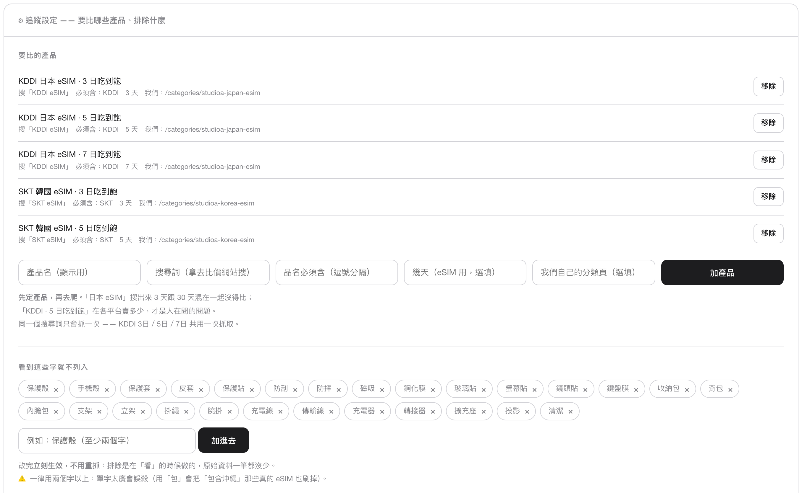
1 · 點開「追蹤設定」
板子最下面那條。現在追的 5 個產品都列在這裡，不要的按「移除」。
2 · 填欄位 → 按「加產品」
產品名給人看；搜尋詞問「別人賣多少」；自家分類頁答「我們賣多少」—— 沒填，STUDIO A 那行會空著。品名必須含刷雜項；幾天選填。
3 · 按「抓一次」
新卡就出現。改設定立刻生效、不用部署 —— 這裡是清單，不是程式。
4 · 搜回一堆殼和貼？
下面「看到這些字就不列入」加排除字（兩個字以上）。懶得填表？跟 Claude 說一句話，欄位它來填。
130
競品比價板 · 動手 · 加追蹤產品
競品比價板 · 第一版上線先存個檔
第一版上線 —— 先存個檔。
板能開了、材料都在 vault 裡 —— 接下來要動程式：自己加來源、加功能。改之前，照今天教過的那一招：先存檔。
複製這一段 · 貼進 Claude Code · 按 ENTER
> 我的競品比價板第一版上線了。幫我存個檔（commit），訊息寫「競品比價板第一版上線」。
之後我要開始改造它 —— 改壞了要能跳回這一版。
接下來大改 —— 你有兩層安全網
① 程式改壞 —— 跟它說「回到上一個存檔」，改壞的整批丟掉、跳回這一版
② 抓到的價格 —— 存在雲端的資料庫、不在程式裡：程式砍掉重練，資料一筆不少
131
競品比價板 · 第一版上線 · 存檔
競品比價板 · 觀念改什麼要部署、改什麼不用
這塊板 —— 你請了一個查價工讀生。
上工 = 部署
你請了他，教會他查價方法：去哪幾個通路、怎麼看價格。方法變了，才需要重新訓練。
查價清單 = 改設定
他口袋裡有一張「要查哪些商品」的清單。換清單跟他說一聲就好，立刻生效、不用重新訓練。
跑一趟 = 抓一次
他每週一早上自己出門查一輪。等不及的話，按「抓一次」就是叫他現在就去。
換清單，說一聲就好 —— 剛剛加產品就是；教新跑法，才要重新訓練 —— 下一題就是。
132
競品比價板 · 觀念 · 查價工讀生
競品比價板 · 動手加第二個來源 · 10 MIN
動手 —— 自己加一個供應商：PChome。
複製這一段 · 貼進 Claude Code · 按 ENTER
> 讀 DEPLOY.md「加第二個搜尋來源（PChome）」那段，幫我把 PChome 加進板子，跟 STUDIO A、momo 排在一起比：
1. 照那段說明改，改好用白話告訴我你動了哪裡
2. 老規矩 npx wrangler deploy 部署上去
3. 開我的板、按「抓一次」，抓完告訴我：哪些產品的結論變了
新增要監控的網站，就是在改程式 ——「怎麼抓 PChome」寫在程式裡，所以改完要重新部署。加產品不用：那只是改清單。
加完注意看 —— 有些卡的「我們最便宜」會翻成「貴 X%」。多一個來源，答案就變了。（新欄顯示「—」＝那家沒賣這個產品，正常。）
10:00
133
競品比價板 · 動手 · 加第二個來源
競品比價板 · 加功能自由建造 · 15 MIN
最後 —— 想加什麼，跟 Claude 說就好。
挑一個，跟它說就好
— 「再加一個要監控的競爭網站」—— 照剛剛 PChome 的做法，再來一家
— 「加一顆『複製週報』按鈕」—— 每張卡的結論變一段字，貼給主管
— 「等資料累積幾週 —— 走勢變折線圖」
改完怎麼上線
— 改完跟它說「幫我部署上線」就好
— 改壞了？「回到上一個存檔」，跳回第一版
— 想不到功能也沒關係，先把自己的產品追對就好
15:00
134
競品比價板 · 加功能 · 自由建造
競品比價板做完了
板做完了 ——
接下來，一個人改。
接下來，一個人改。
今天五段都動手做過了。最後一段，換一個人單獨坐在 Claude Code 前面 —— 練一件事：改壞了，怎麼安全地退回去。
時光機
135
時光機
安全網 · 改壞回得去兩台時光機
一個人改也不用怕 —— 你有 兩台時光機。
左邊管檔案、右邊管對話。
VS Code — 你的 vault
📁 EXPLORER
inbox/
plan.md
Demo_Competitor_Monitor/
index.htmlM
↑ 剛剛改壞了
worker.js
CLAUDE.md
🗄 檔案時光機 · git
說「幫我存檔」＝ 存檔點
改壞 →「回到上一個存檔」＝ 還原
改壞 →「回到上一個存檔」＝ 還原
✦ Claude Code
算每個產品的毛利（單價 − 進貨成本）
算好了 ✓
（做了 2 步才發現）毛利忘了扣行銷費…
好，我在後面補
（前面全要重來、愈補愈亂…）
⟲ Esc × 2 → 回到出錯那句、把公式改掉
💬 對話時光機 · Esc × 2
按兩下 Esc → 退回剛剛某一句、換句重講（你自己按）
兩半、各一台時光機 —— 弄不壞它，放膽改。
136
安全網 · 改壞回得去 · 兩台時光機
安全網 · 改壞回得去看圖：esc×2 跳出選單、選出錯那句、換公式
esc × 2 —— 跳出選單、回到出錯那句、走另一個世界。
世界 A · 你在的時間線
你〔第 ① 句〕
三個產品的單價／進貨成本〔資料〕你〔第 ② 句〕
算毛利（毛利 = 單價 − 進貨成本）CLAUDE
毛利排名好了 ✓你
再幫我標出要砍的（毛利太低）CLAUDE
標好了 ✓❌ 第 ② 句漏了 15% 行銷費 —— 後面這些全錯
⟲ Esc × 2
回到哪一句？
再幫我標出要砍的（毛利太低）
算毛利（毛利 = 單價 − 進貨成本） ← 出錯那句
三個產品的單價／進貨成本〔資料〕
↑↓ 選 · Enter 回到那裡
選第 ② 句、改公式
→ 走世界 B
→ 走世界 B
世界 B · 回到第 ② 句、換掉公式
你〔第 ① 句 · 沒動〕
三個產品的單價／進貨成本〔資料〕你〔第 ② 句 · 已換〕
算毛利（毛利 = 單價 − 進貨成本 − 單價×15% 行銷費）CLAUDE
毛利排名好了 —— 跟剛剛不一樣你
再幫我標出要砍的（毛利太低）CLAUDE
標好了 —— 要砍的也不一樣✓ 只改第 ② 句、資料沒動 —— 扣了行銷費才是真毛利
世界 A · 你照舊公式算、又做了 2 步 —— 第 ② 句漏了行銷費，下游全錯。按「下一步」。
137
安全網 · 對話分叉 · esc × 2
安全網 · 動手換你試一次 · 3 MIN
換你試 —— esc × 2 回到出錯那句、改公式。
① 照貼 → 先把資料給它（這句是乾淨的、等下不用動）
我有三個產品的單價和進貨成本：
A 單價 100、進貨 60
B 單價 400、進貨 330
C 單價 80、進貨 52
先記著，等一下我會問你怎麼算。
A 單價 100、進貨 60
B 單價 400、進貨 330
C 單價 80、進貨 52
先記著，等一下我會問你怎麼算。
② 照貼 → 叫它算毛利 ← 這句漏了行銷費，等下要改的就是它
幫我算每個的毛利（毛利 = 單價 − 進貨成本），把毛利最低的標出來。
③ 再往前走一步 —— 針對「最低的那個」要建議
毛利最低的那個，建議我調漲多少售價？
④ 按 esc × 2 → 選回第 ② 句（不是最前面那句）→ 換成這句
幫我算每個的毛利（毛利 = 單價 − 進貨成本 − 單價 × 15% 行銷費），把毛利最低的標出來。
03:00
看 —— 與其在後面一個一個補破網，不如 回到出錯那句改一次，新的一輪整串自己對。
只倒到第 ② 句 —— 第 ① 句的資料原封不動、不用重貼。倒帶要倒到出錯那句，不是倒到最前面。
盯著看 —— 最該砍的從 C 翻成 B：高單價被行銷費吃光。剛剛 ③ 替 C 想的調價，其實白忙。
138
安全網 · 動手 · 換你試 esc × 2
安全網 · 改壞回得去檔案時光機 · git
第二台 · 檔案時光機 = git —— 存個點、隨時跳回。
說「幫我存檔」= git 在時間線記一個存檔點（commit）·「回到上一個存檔」= 跳回那個點。
開始
▲ 你在這
現在
改動中
▲ 你在這
現在
壞了
▲ 你在這
M工具改了、還沒存
你改好一版、還沒存 —— 改過的檔都亮著記號（M）。按「下一步」看存檔 → 改壞 → 跳回。
好消息：今天你已經存過檔了 —— 不用做任何設定。你全程不打 git 指令、只說「幫我存檔 ／ 回到上一個存檔」。
139
安全網 · 改壞回得去 · 檔案時光機 · git
安全網 · 動手換你試一次 · 5 MIN
換你試 —— 存個點、改壞、回得去。
① 照貼 → 在 inbox 做一個檔案，然後存檔
在 inbox 資料夾裡幫我做一個檔案 my-note.md，裡面寫這三行：
改壞了不要慌。
我有兩台時光機。
esc × 2 救對話、git 救檔案。
做好之後幫我存個檔（commit）。
改壞了不要慌。
我有兩台時光機。
esc × 2 救對話、git 救檔案。
做好之後幫我存個檔（commit）。
② 故意改壞一版
把 inbox/my-note.md 整個改寫，全部換成英文，再加一堆雜七雜八的內容。
③ 說「回到上一個存檔」
我不喜歡這版，把 inbox/my-note.md 回到上一個存檔。
盯著看：內容自己跳回那三行
05:00
你沒手動 undo、沒重打 —— git 把整個檔案跳回乾淨的存檔點，壞的那段丟掉。
esc × 2 救對話、git 救檔案。檔案改壞 → 回到上一個存檔。
140
安全網 · 動手 · 換你試 存檔／跳回
兩台時光機收束
兩台都試過了 ——
對話走歪、檔案改壞，
你都回得去。
對話走歪、檔案改壞，
你都回得去。
一個人也弄不壞它
141
時光機 · 收束
收尾最後這一段
最後這一段 ——
不講我教了什麼，
講你明天要做什麼。
不講我教了什麼，
講你明天要做什麼。
下一站 · 換你們說
142
收尾
討論 · 10 分鐘換你們說
找旁邊的人 —— 聊兩題。
第一題
今天一整天，哪一段最有感覺？
第二題
回到工作上，你會先用在哪？
今天 · 你走過這些
AI 工作環境 Claude Code 住在你電腦
「開工」「收工」 排今天 · 收成果
知識管理 東西放哪 · 找得回來
信箱、行事曆 接上了
自己的 skill 美術需求單 · 商品頁 SEO 健檢
公司規格的簡報 自己生的
競品比價板 上雲 · 自己加了 PChome
兩台時光機 改壞了回得去
10:00
143
收尾 · 討論 · 換你們說
收工謝謝
明天早上 ——
打「開工」。
打「開工」。
走之前最後一件事 —— 2 分鐘匿名回饋，讓下一梯更好：flux-course-survey.pages.dev
收工 · 謝謝
144
收工 · 謝謝